library(cmw26)
library(ggplot2)
library(dplyr)
library(tidyr)
data_path <- "./var_inputs/_data/main"
suff_stats_path <- "./suff_stats"
# Display settings
theme_set(theme_minimal(base_size = 12))Replicating CMW26: Evaluating Monetary Policy Counterfactuals
R Port of Caravello, McKay & Wolf (2026)
Overview
This vignette replicates the main results from “Evaluating Monetary Policy Counterfactuals: (When) Do We Need Structural Models?” by Caravello, McKay, and Wolf (2026) using the R package cmw26.
The original MATLAB code (main_mp_modelcnfctls.m) produces:
- Figure 2: Monetary policy IRFs (Aruoba-Drechsel and Romer-Romer shocks)
- Figures 3-4: Matched model IRFs vs empirical VAR estimates
- Figure 5: News shock IRFs (anticipated monetary policy)
- Table 5.1 & Figures D.1-D.2: Counterfactual second moments
- Figure 6: Main business cycle shock counterfactuals
- Figure 7: Historical evolution (Great Recession)
- Figure 8: Historical scenario (post-COVID inflation)
This replication uses the R implementations in the cmw26 package to perform computations equivalent to the original MATLAB code.
Setup
Load and Prepare Data
Load Raw Data
The CMW data contains quarterly macroeconomic series from 1954Q3 onwards.
# Load raw data
data_raw <- read.csv(file.path(data_path, "_data_cmw.csv"))Transform Variables
Following the MATLAB code (run_var_wold.m), we transform the data:
- GDP, Investment, Consumption, Hours, TFP, Labor Productivity, Labor Share: 100 * Hamilton-filtered log levels
- Inflation: annualized rate (400 * quarterly change)
- Interest Rate: annualized Federal Funds Rate
# Extract series
gdp <- data_raw$gdp
unemp <- data_raw$unemp
ffr <- 4 * data_raw$ffr # Annualize
infl <- 100 * 4 * data_raw$infl # Annualize
inv <- data_raw$inv
cons <- data_raw$cons
lab <- data_raw$lab
lab_share <- data_raw$lab_share
lab_prod <- data_raw$lab_prod
tfp <- data_raw$tfp
# Apply Hamilton filter (h=8, p=4) to level variables
# This removes low-frequency trends while preserving business cycle variation
gdp_hp <- 100 * hamilton(gdp, h = 8, p = 4)
inv_hp <- 100 * hamilton(inv, h = 8, p = 4)
cons_hp <- 100 * hamilton(cons, h = 8, p = 4)
lab_hp <- 100 * hamilton(lab, h = 8, p = 4)
lab_share_hp <- 100 * hamilton(lab_share, h = 8, p = 4)
lab_prod_hp <- 100 * hamilton(lab_prod, h = 8, p = 4)
tfp_hp <- 100 * hamilton(tfp, h = 8, p = 4)
# Combine into VAR data matrix
# Order: unemp, gdp, inv, cons, lab, tfp, lab_prod, lab_share, infl, ffr
vardata_full <- cbind(unemp, gdp_hp, inv_hp, cons_hp, lab_hp, tfp_hp,
lab_prod_hp, lab_share_hp, infl, ffr)
series_names <- c("Unemployment", "Output", "Investment", "Consumption",
"Hours", "TFP", "Labor Productivity", "Labor Share",
"Inflation", "Interest Rate")
colnames(vardata_full) <- series_names
# Sample selection (1960Q1 to 2019Q4)
date <- data_raw$date
startdate <- which(date == 1960)
enddate <- which(date == 2019.75)
vardata <- vardata_full[startdate:enddate, ]
# Demean the data - MATLAB uses detrend() which removes LINEAR trend (not just mean)
# MATLAB's detrend removes best fit line y = a + b*t
# const_type = 2 matches MATLAB: remove constant AND linear trend
vardata_dt <- detrend(vardata, const_type = 2)$Res
colnames(vardata_dt) <- series_names # Preserve column namesLoad Sufficient Statistics
The sufficient statistics contain posterior draws of the monetary policy causal effect matrices from four structural models:
- RE RANK: Rational Expectations Representative Agent New Keynesian
- RE HANK: Rational Expectations Heterogeneous Agent New Keynesian
- Behav. RANK: Behavioral RANK
- Behav. HANK: Behavioral HANK
The key objects are: - Pi.m.collector: Inflation response to monetary policy (T x T x n_draws) - Y.m.collector: Output response to monetary policy
- R.n.m.collector: Interest rate response to monetary policy
# Load RE models
rank_draws <- readRDS(file.path(suff_stats_path, "ratex/rank_draws_main.rds"))
hank_draws <- readRDS(file.path(suff_stats_path, "ratex/hank_draws_main.rds"))
# Load behavioral models
brank_draws <- readRDS(file.path(suff_stats_path, "behavioral/rank_draws_main_behav.rds"))
bhank_draws <- readRDS(file.path(suff_stats_path, "behavioral/hank_draws_main_behav.rds"))
# Load all models mixture (draws sampled according to posterior model probabilities)
all_models <- readRDS(file.path(suff_stats_path, "mix/all_models_draws.rds"))
# Extract dimensions
T_model <- dim(rank_draws$Pi.m.collector)[1]
n_draws <- dim(rank_draws$Pi.m.collector)[3]
# Model posterior probabilities
if ("model.posteriors.all.models" %in% names(all_models)) {
model_probs <- all_models$model.posteriors.all.models
}Application Settings
# Sample settings
indic_early <- FALSE # TRUE: early sample (1960-2007), FALSE: standard (1960-2019)
# Model selection for counterfactuals
indic_models <- TRUE # Report all four models separately?
indic_emp <- FALSE # Use purely empirical approach?
# Counterfactual policy rule (select one)
cnfctl_rule <- "optpol" # Options: "output_gap", "inflation", "rate_peg",
# "taylor", "ngdp", "optpol"VAR Estimation and Wold IRFs
Following the MATLAB code (run_var_wold.m), we estimate a Bayesian VAR and compute Wold impulse response functions.
Estimate Bayesian VAR
# VAR settings (same as run_var_wold.m)
n_lags <- 4 # No. of lags
constant <- 0 # No constant (data is detrended)
IRF_hor <- 250 # IRF horizon
n_var_draws <- 1000 # No. of posterior draws
# Estimate BVAR with flat prior (essentially OLS)
bvar_result <- estimate_bvar(vardata_dt, n_lags = n_lags,
constant = constant, n_draws = n_var_draws)Compute Wold IRFs
The Wold decomposition provides orthogonalized impulse responses to structural shocks (using Cholesky rotation for identification).
n_y <- ncol(vardata_dt)
# Benchmark rotation (Cholesky decomposition)
bench_rot <- t(chol(bvar_result$Sigma_OLS))
# Compute Wold IRFs from OLS estimates
Theta_OLS <- array(0, dim = c(n_y, n_y, IRF_hor))
Theta_OLS[, , 1] <- diag(n_y)
# Companion form coefficients
B_mat <- bvar_result$B_OLS
for (l in 1:(IRF_hor - 1)) {
for (j in 1:min(l, n_lags)) {
B_j <- B_mat[((j - 1) * n_y + 1):(j * n_y), ]
Theta_OLS[, , l + 1] <- Theta_OLS[, , l + 1] + t(B_j) %*% Theta_OLS[, , l - j + 1]
}
}
# Apply rotation to get structural IRFs
IRF_OLS <- array(0, dim = c(n_y, n_y, IRF_hor))
for (h in 1:IRF_hor) {
IRF_OLS[, , h] <- Theta_OLS[, , h] %*% bench_rot
}Visualize Key IRFs
# Extract inflation, output, and interest rate responses
# Variable order: [1] Unemp, [2] Output, [3] Inv, [4] Cons, [5] Hours,
# [6] TFP, [7] Lab Prod, [8] Lab Share, [9] Inflation, [10] Rate
var_idx <- c(9, 2, 10) # Inflation, Output, Interest Rate
var_labels <- c("Inflation", "Output Gap", "Interest Rate")
# Plot responses to monetary policy shock (shock to interest rate, column 10)
shock_idx <- 10
plot_hor <- 40
df_irf <- data.frame(
horizon = rep(0:(plot_hor - 1), length(var_idx)),
variable = rep(var_labels, each = plot_hor),
response = c(IRF_OLS[var_idx[1], shock_idx, 1:plot_hor],
IRF_OLS[var_idx[2], shock_idx, 1:plot_hor],
IRF_OLS[var_idx[3], shock_idx, 1:plot_hor])
)
df_irf$variable <- factor(df_irf$variable, levels = var_labels)
ggplot(df_irf, aes(x = horizon, y = response)) +
geom_line(color = "steelblue", linewidth = 1) +
geom_hline(yintercept = 0, linetype = "dashed", alpha = 0.5) +
facet_wrap(~variable, scales = "free_y", ncol = 1) +
labs(
title = "Wold IRFs to Monetary Policy Shock",
subtitle = "Cholesky identification (interest rate ordered last)",
x = "Quarters",
y = "Response"
) +
theme_minimal()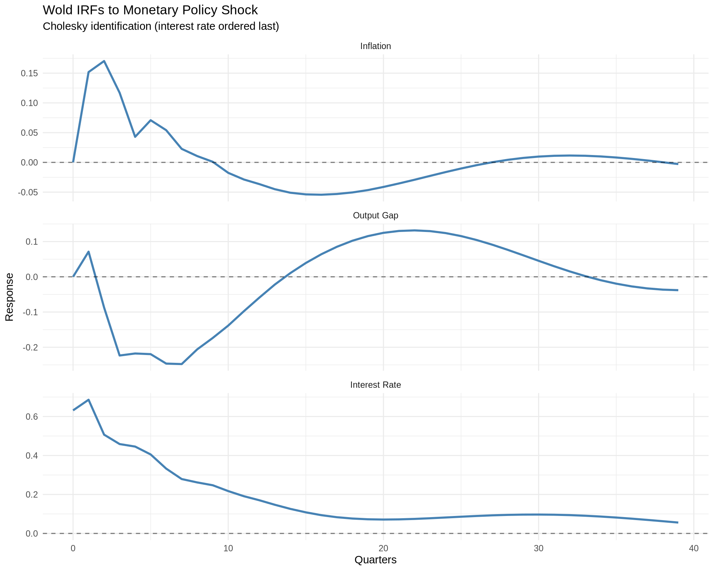
Figures 3-5: Model IRFs and News Shocks
This section replicates Figures 3-5, which compare the estimated structural model IRFs to monetary policy shocks with those from the VAR and examine “news shock” responses (anticipated monetary policy changes).
Load Model Mode Estimates
# Load modal posterior estimates for each model
# These contain the matched IRFs to VAR empirical estimates
params_rank <- readRDS(file.path(suff_stats_path, "ratex/params_rank_mode.rds"))
params_hank <- readRDS(file.path(suff_stats_path, "ratex/params_hank_mode.rds"))
params_brank <- readRDS(file.path(suff_stats_path, "behavioral/params_rank_mode_behav.rds"))
params_bhank <- readRDS(file.path(suff_stats_path, "behavioral/params_hank_mode_behav.rds"))
# Extract model IRFs and matching weights
# Columns of m.fit: [1] Aruoba-Drechsel, [2] Romer-Romer
T_model_full <- nrow(params_rank$Pi.m.rank)Compute Matched Model IRFs
# Pad m.fit to full dimension
pad_mfit <- function(m_fit, T_full) {
n_shocks <- ncol(m_fit)
m_padded <- matrix(0, T_full, n_shocks)
m_padded[1:nrow(m_fit), ] <- m_fit
m_padded
}
m_fit_rank <- pad_mfit(params_rank$m.fit.rank, T_model_full)
m_fit_hank <- pad_mfit(params_hank$m.fit.hank, T_model_full)
m_fit_brank <- pad_mfit(params_brank$m.fit.rank, T_model_full)
m_fit_bhank <- pad_mfit(params_bhank$m.fit.hank, T_model_full)
# Compute matched IRFs: Pi_m * m_fit gives IRF path for each shock type
# Matched IRFs for RANK
Pi_m_rank_match <- params_rank$Pi.m.rank %*% m_fit_rank
Y_m_rank_match <- params_rank$Y.m.rank %*% m_fit_rank
R_n_m_rank_match <- params_rank$R.n.m.rank %*% m_fit_rank
# Matched IRFs for HANK
Pi_m_hank_match <- params_hank$Pi.m.hank %*% m_fit_hank
Y_m_hank_match <- params_hank$Y.m.hank %*% m_fit_hank
R_n_m_hank_match <- params_hank$R.n.m.hank %*% m_fit_hank
# Matched IRFs for B-RANK
Pi_m_brank_match <- params_brank$Pi.m.rank %*% m_fit_brank
Y_m_brank_match <- params_brank$Y.m.rank %*% m_fit_brank
R_n_m_brank_match <- params_brank$R.n.m.rank %*% m_fit_brank
# Matched IRFs for B-HANK
Pi_m_bhank_match <- params_bhank$Pi.m.hank %*% m_fit_bhank
Y_m_bhank_match <- params_bhank$Y.m.hank %*% m_fit_bhank
R_n_m_bhank_match <- params_bhank$R.n.m.hank %*% m_fit_bhankFigure 3
# Compute empirical VAR IRFs for AD and RR shocks (same as run_var_mp_adrr.m)
# Load data with shock series
data_emp_fig34 <- read.csv(file.path(data_path, "_data_cmw.csv"))
# Extract series
ad_shock_fig34 <- data_emp_fig34$ad
rr_shock_fig34 <- data_emp_fig34$rr_1
# Transform macro variables
gdp_emp_fig34 <- 100 * hamilton(data_emp_fig34$gdp, h = 8, p = 4)
infl_emp_fig34 <- 100 * 4 * data_emp_fig34$infl
ffr_emp_fig34 <- 4 * data_emp_fig34$ffr
# Sample: 1969-2006.75
date_emp_fig34 <- data_emp_fig34$date
startdate_emp_fig34 <- which(date_emp_fig34 == 1969)
enddate_emp_fig34 <- which(date_emp_fig34 == 2006.75)
# Build VAR data: [ad_shock, gdp, infl, rr_shock, ffr]
vardata_emp_fig34 <- cbind(ad_shock_fig34, gdp_emp_fig34, infl_emp_fig34,
rr_shock_fig34, ffr_emp_fig34)
vardata_emp_fig34 <- vardata_emp_fig34[startdate_emp_fig34:enddate_emp_fig34, ]
vardata_emp_fig34[is.na(vardata_emp_fig34)] <- 0
# VAR settings
n_lags_fig34 <- 2
constant_fig34 <- 2
IRF_hor_fig34 <- 200
n_draws_fig34 <- 1000
n_y_fig34 <- ncol(vardata_emp_fig34)
# Shock positions: AD at column 1, RR at column 4
shock_pos_fig34 <- c(1, 4)
n_shocks_fig34 <- length(shock_pos_fig34)
# Estimate BVAR
bvar_fig34 <- estimate_bvar(vardata_emp_fig34, n_lags = n_lags_fig34,
constant = constant_fig34, n_draws = n_draws_fig34)
# Compute IRFs for OLS and each draw
irf_draws_fig34 <- array(NA, dim = c(IRF_hor_fig34, n_y_fig34, n_shocks_fig34, n_draws_fig34))
for (i_draw in seq_len(n_draws_fig34)) {
Sigma_u <- bvar_fig34$Sigma_draws[[i_draw]]
B <- bvar_fig34$B_draws[[i_draw]]
bench_rot <- t(chol(Sigma_u))
IRF_Wold <- array(0, dim = c(n_y_fig34, n_y_fig34, IRF_hor_fig34))
IRF_Wold[, , 1] <- diag(n_y_fig34)
for (l in 1:(IRF_hor_fig34 - 1)) {
for (j in 1:min(l, n_lags_fig34)) {
B_j <- B[((j - 1) * n_y_fig34 + 1):(j * n_y_fig34), ]
IRF_Wold[, , l + 1] <- IRF_Wold[, , l + 1] + t(B_j) %*% IRF_Wold[, , l - j + 1]
}
}
IRF_draw <- array(0, dim = c(n_y_fig34, n_y_fig34, IRF_hor_fig34))
for (h in 1:IRF_hor_fig34) {
IRF_draw[, , h] <- IRF_Wold[, , h] %*% bench_rot
}
for (i_shock in seq_along(shock_pos_fig34)) {
irf_draws_fig34[, , i_shock, i_draw] <- t(IRF_draw[, shock_pos_fig34[i_shock], ])
}
}
# Compute OLS IRFs
bench_rot_ols_fig34 <- t(chol(bvar_fig34$Sigma_OLS))
IRF_Wold_ols_fig34 <- array(0, dim = c(n_y_fig34, n_y_fig34, IRF_hor_fig34))
IRF_Wold_ols_fig34[, , 1] <- diag(n_y_fig34)
for (l in 1:(IRF_hor_fig34 - 1)) {
for (j in 1:min(l, n_lags_fig34)) {
B_j <- bvar_fig34$B_OLS[((j - 1) * n_y_fig34 + 1):(j * n_y_fig34), ]
IRF_Wold_ols_fig34[, , l + 1] <- IRF_Wold_ols_fig34[, , l + 1] +
t(B_j) %*% IRF_Wold_ols_fig34[, , l - j + 1]
}
}
IRF_ols_fig34 <- array(0, dim = c(n_y_fig34, n_y_fig34, IRF_hor_fig34))
for (h in 1:IRF_hor_fig34) {
IRF_ols_fig34[, , h] <- IRF_Wold_ols_fig34[, , h] %*% bench_rot_ols_fig34
}
irf_ols_fig34 <- array(NA, dim = c(IRF_hor_fig34, n_y_fig34, n_shocks_fig34))
for (i_shock in seq_along(shock_pos_fig34)) {
irf_ols_fig34[, , i_shock] <- t(IRF_ols_fig34[, shock_pos_fig34[i_shock], ])
}
# Extract empirical IRFs: Output (2), Inflation (3), Interest Rate (5)
# OLS median
Y_m_emp <- irf_ols_fig34[, 2, ] # Output
Pi_m_emp <- irf_ols_fig34[, 3, ] # Inflation
R_n_m_emp <- irf_ols_fig34[, 5, ] # Interest rate
# Confidence bands (16th and 84th percentiles)
Y_m_lb_emp <- apply(irf_draws_fig34[, 2, , ], c(1, 2), quantile, 0.16)
Y_m_ub_emp <- apply(irf_draws_fig34[, 2, , ], c(1, 2), quantile, 0.84)
Pi_m_lb_emp <- apply(irf_draws_fig34[, 3, , ], c(1, 2), quantile, 0.16)
Pi_m_ub_emp <- apply(irf_draws_fig34[, 3, , ], c(1, 2), quantile, 0.84)
R_n_m_lb_emp <- apply(irf_draws_fig34[, 5, , ], c(1, 2), quantile, 0.16)
R_n_m_ub_emp <- apply(irf_draws_fig34[, 5, , ], c(1, 2), quantile, 0.84)# Plot horizon
IRF_hor_plot <- 25
# Model colors
colors_models <- c("#C4AE78", "#CC0000")
shock_names <- c("Aruoba-Drechsel", "Romer-Romer")
# Create combined plot for both shocks
plot_list <- list()
for (i_shock in 1:2) {
# Scale by max empirical interest rate response
# R_n_m_emp is already annualized from the VAR estimation
scale_factor <- 1 / max(abs(R_n_m_emp[1:IRF_hor_plot, i_shock]))
# Build data frame for model IRFs
df_match <- data.frame(
horizon = rep(0:(IRF_hor_plot - 1), 12),
value = c(
scale_factor * Y_m_rank_match[1:IRF_hor_plot, i_shock],
scale_factor * Y_m_hank_match[1:IRF_hor_plot, i_shock],
scale_factor * Y_m_brank_match[1:IRF_hor_plot, i_shock],
scale_factor * Y_m_bhank_match[1:IRF_hor_plot, i_shock],
scale_factor * 4 * Pi_m_rank_match[1:IRF_hor_plot, i_shock],
scale_factor * 4 * Pi_m_hank_match[1:IRF_hor_plot, i_shock],
scale_factor * 4 * Pi_m_brank_match[1:IRF_hor_plot, i_shock],
scale_factor * 4 * Pi_m_bhank_match[1:IRF_hor_plot, i_shock],
scale_factor * 4 * R_n_m_rank_match[1:IRF_hor_plot, i_shock],
scale_factor * 4 * R_n_m_hank_match[1:IRF_hor_plot, i_shock],
scale_factor * 4 * R_n_m_brank_match[1:IRF_hor_plot, i_shock],
scale_factor * 4 * R_n_m_bhank_match[1:IRF_hor_plot, i_shock]
),
model = rep(rep(c("RANK", "HANK", "B-RANK", "B-HANK"), each = IRF_hor_plot), 3),
variable = rep(c("Output", "Inflation", "Interest Rate"), each = 4 * IRF_hor_plot)
)
# Add empirical IRFs with confidence bands
df_emp <- data.frame(
horizon = rep(0:(IRF_hor_plot - 1), 3),
value = c(
scale_factor * Y_m_emp[1:IRF_hor_plot, i_shock],
scale_factor * Pi_m_emp[1:IRF_hor_plot, i_shock],
scale_factor * R_n_m_emp[1:IRF_hor_plot, i_shock]
),
lower = c(
scale_factor * Y_m_lb_emp[1:IRF_hor_plot, i_shock],
scale_factor * Pi_m_lb_emp[1:IRF_hor_plot, i_shock],
scale_factor * R_n_m_lb_emp[1:IRF_hor_plot, i_shock]
),
upper = c(
scale_factor * Y_m_ub_emp[1:IRF_hor_plot, i_shock],
scale_factor * Pi_m_ub_emp[1:IRF_hor_plot, i_shock],
scale_factor * R_n_m_ub_emp[1:IRF_hor_plot, i_shock]
),
variable = rep(c("Output", "Inflation", "Interest Rate"), each = IRF_hor_plot)
)
df_match$variable <- factor(df_match$variable,
levels = c("Output", "Inflation", "Interest Rate"))
df_match$model <- factor(df_match$model,
levels = c("RANK", "HANK", "B-RANK", "B-HANK"))
df_emp$variable <- factor(df_emp$variable,
levels = c("Output", "Inflation", "Interest Rate"))
# Empirical color based on shock type (grey for AD, purple for RR)
emp_color <- if (i_shock == 1) "#828282" else "#A020F0"
emp_label <- if (i_shock == 1) "Empirical (AD)" else "Empirical (RR)"
# Add model column to empirical data for legend
df_emp$model <- emp_label
p <- ggplot() +
# Empirical bands
geom_ribbon(data = df_emp, aes(x = horizon, ymin = lower, ymax = upper),
fill = emp_color, alpha = 0.5) +
# Empirical median (mapped to color for legend)
geom_line(data = df_emp, aes(x = horizon, y = value, color = model),
linewidth = 1.5) +
# Model IRFs
geom_line(data = df_match, aes(x = horizon, y = value, color = model, linetype = model),
linewidth = 1) +
geom_hline(yintercept = 0, linetype = "dashed") +
facet_wrap(~variable, scales = "free_y", ncol = 3) +
scale_color_manual(
values = c("RANK" = colors_models[1], "HANK" = colors_models[2],
"B-RANK" = colors_models[1], "B-HANK" = colors_models[2],
"Empirical (AD)" = "#828282", "Empirical (RR)" = "#A020F0"),
breaks = c(emp_label, "RANK", "HANK", "B-RANK", "B-HANK")
) +
scale_linetype_manual(
values = c("RANK" = "solid", "HANK" = "solid",
"B-RANK" = "dashed", "B-HANK" = "dashed"),
guide = "none" # Hide linetype legend, use color only
) +
labs(
title = paste0("Figure 3-", i_shock, ": Model IRFs - ", shock_names[i_shock], " Shock"),
subtitle = "Shaded band = Empirical VAR (68% CI)",
x = "Quarters",
y = "% Deviation (normalized)",
color = "Model"
) +
theme_minimal() +
theme(legend.position = "bottom")
plot_list[[i_shock]] <- p
}
# Print plots (the article starts with Romer)
plot_list[[2]]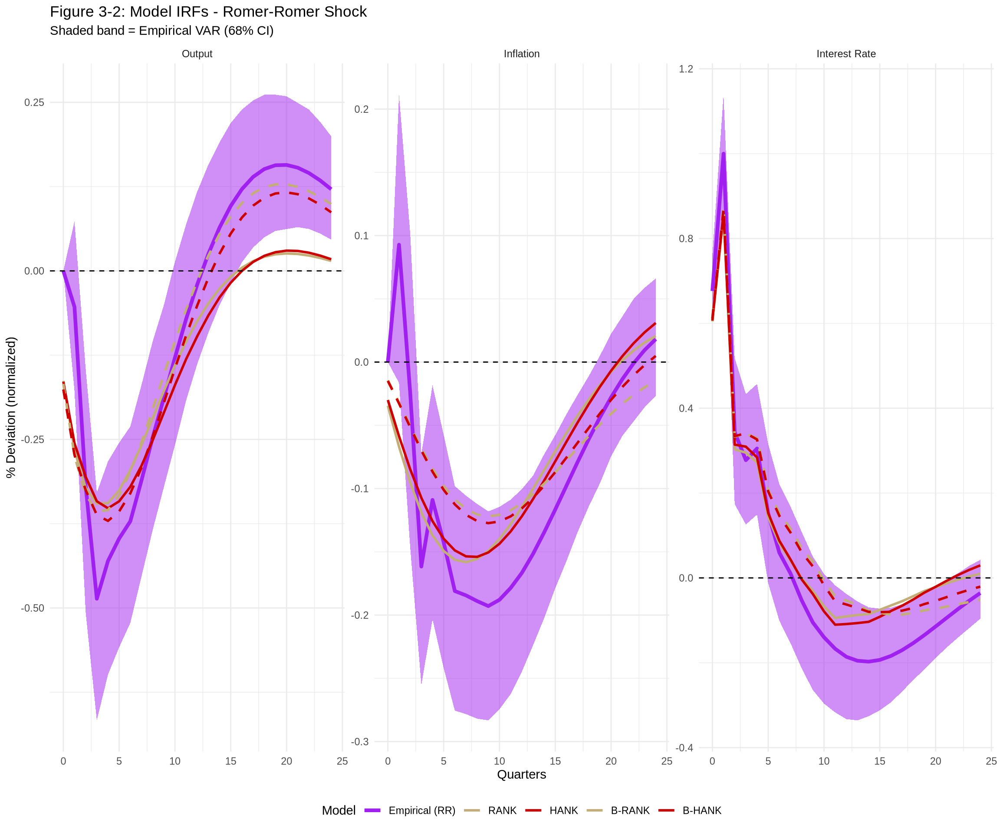
plot_list[[1]]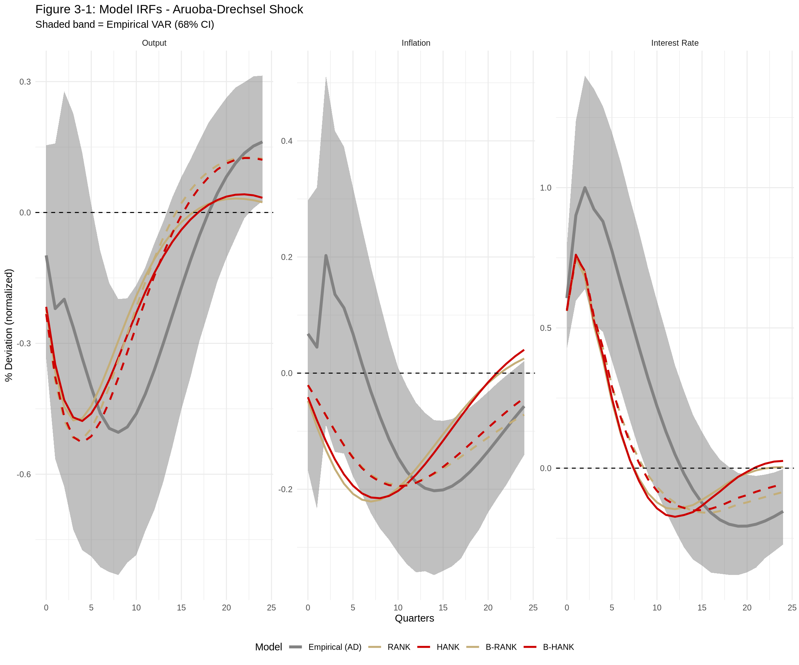
saveRDS(plot_list, "figure-3.rds")Figures 4 and 5
A “news shock” is an anticipated monetary policy change. Here we examine the response to a monetary policy shock that is announced 16 quarters (4 years) in advance.
# News shock horizon (anticipated 16 quarters ahead)
news_horizon <- 16
# Create news shock vector: unit shock at horizon 16
m_news <- rep(0, T_model_full)
m_news[news_horizon] <- 1
# Compute news shock IRFs for each model using posterior draws
# This shows the response to policy that agents anticipate
n_draws_news <- min(100, n_draws)
IRF_hor_news <- 41
# Storage for news shock IRFs
news_irfs <- list()
for (model_name in c("rank", "hank", "brank", "bhank")) {
if (model_name == "rank") {
draws <- rank_draws
Pi_name <- "Pi.m.collector"
Y_name <- "Y.m.collector"
R_name <- "R.n.m.collector"
} else if (model_name == "hank") {
draws <- hank_draws
Pi_name <- "Pi.m.collector"
Y_name <- "Y.m.collector"
R_name <- "R.n.m.collector"
} else if (model_name == "brank") {
draws <- brank_draws
Pi_name <- "Pi.m.collector"
Y_name <- "Y.m.collector"
R_name <- "R.n.m.collector"
} else {
draws <- bhank_draws
Pi_name <- "Pi.m.collector"
Y_name <- "Y.m.collector"
R_name <- "R.n.m.collector"
}
T_draw <- dim(draws[[Pi_name]])[1]
n_actual_draws <- min(n_draws_news, dim(draws[[Pi_name]])[3])
# Extend m_news to match draw dimensions
m_news_draw <- rep(0, T_draw)
m_news_draw[news_horizon] <- 1
Pi_news <- matrix(NA, IRF_hor_news, n_actual_draws)
Y_news <- matrix(NA, IRF_hor_news, n_actual_draws)
R_news <- matrix(NA, IRF_hor_news, n_actual_draws)
for (d in seq_len(n_actual_draws)) {
Pi_news[, d] <- (draws[[Pi_name]][1:IRF_hor_news, , d] %*% m_news_draw)[, 1]
Y_news[, d] <- (draws[[Y_name]][1:IRF_hor_news, , d] %*% m_news_draw)[, 1]
R_news[, d] <- (draws[[R_name]][1:IRF_hor_news, , d] %*% m_news_draw)[, 1]
}
news_irfs[[model_name]] <- list(
Pi_med = apply(Pi_news, 1, median),
Pi_lb = apply(Pi_news, 1, quantile, 0.16),
Pi_ub = apply(Pi_news, 1, quantile, 0.84),
Y_med = apply(Y_news, 1, median),
Y_lb = apply(Y_news, 1, quantile, 0.16),
Y_ub = apply(Y_news, 1, quantile, 0.84),
R_med = apply(R_news, 1, median),
R_lb = apply(R_news, 1, quantile, 0.16),
R_ub = apply(R_news, 1, quantile, 0.84)
)
}# Figure 4: RANK vs HANK
df_news_rankhank <- data.frame(
horizon = rep(0:(IRF_hor_news - 1), 6),
value = c(
news_irfs$rank$Y_med, news_irfs$hank$Y_med,
4 * news_irfs$rank$Pi_med, 4 * news_irfs$hank$Pi_med,
4 * news_irfs$rank$R_med, 4 * news_irfs$hank$R_med
),
lower = c(
news_irfs$rank$Y_lb, news_irfs$hank$Y_lb,
4 * news_irfs$rank$Pi_lb, 4 * news_irfs$hank$Pi_lb,
4 * news_irfs$rank$R_lb, 4 * news_irfs$hank$R_lb
),
upper = c(
news_irfs$rank$Y_ub, news_irfs$hank$Y_ub,
4 * news_irfs$rank$Pi_ub, 4 * news_irfs$hank$Pi_ub,
4 * news_irfs$rank$R_ub, 4 * news_irfs$hank$R_ub
),
model = rep(rep(c("RANK", "HANK"), each = IRF_hor_news), 3),
variable = rep(c("Output", "Inflation", "Interest Rate"), each = 2 * IRF_hor_news)
)
df_news_rankhank$variable <- factor(df_news_rankhank$variable,
levels = c("Output", "Inflation", "Interest Rate"))
f4 <- ggplot(df_news_rankhank, aes(x = horizon, y = value, color = model, fill = model)) +
geom_ribbon(aes(ymin = lower, ymax = upper), alpha = 0.2, color = NA) +
geom_line(linewidth = 1) +
geom_hline(yintercept = 0, linetype = "dashed", alpha = 0.5) +
geom_vline(xintercept = news_horizon, linetype = "dashed", alpha = 0.5) +
facet_wrap(~variable, scales = "free_y", ncol = 3) +
scale_color_manual(values = c("RANK" = "#C4AE78", "HANK" = "#CC0000")) +
scale_fill_manual(values = c("RANK" = "#C4AE78", "HANK" = "#CC0000")) +
labs(
title = "Figure 4: News Shock IRFs - RANK vs HANK",
subtitle = paste0("Response to monetary policy shock anticipated ", news_horizon,
" quarters ahead (68% bands)"),
x = "Quarters",
y = "% Deviation (annualized)",
color = "Model",
fill = "Model"
) +
theme_minimal() +
theme(legend.position = "bottom")
# Figure 5: RANK vs B-RANK
df_news_rankbrank <- data.frame(
horizon = rep(0:(IRF_hor_news - 1), 6),
value = c(
news_irfs$rank$Y_med, news_irfs$brank$Y_med,
4 * news_irfs$rank$Pi_med, 4 * news_irfs$brank$Pi_med,
4 * news_irfs$rank$R_med, 4 * news_irfs$brank$R_med
),
lower = c(
news_irfs$rank$Y_lb, news_irfs$brank$Y_lb,
4 * news_irfs$rank$Pi_lb, 4 * news_irfs$brank$Pi_lb,
4 * news_irfs$rank$R_lb, 4 * news_irfs$brank$R_lb
),
upper = c(
news_irfs$rank$Y_ub, news_irfs$brank$Y_ub,
4 * news_irfs$rank$Pi_ub, 4 * news_irfs$brank$Pi_ub,
4 * news_irfs$rank$R_ub, 4 * news_irfs$brank$R_ub
),
model = rep(rep(c("RANK", "B-RANK"), each = IRF_hor_news), 3),
variable = rep(c("Output", "Inflation", "Interest Rate"), each = 2 * IRF_hor_news)
)
df_news_rankbrank$variable <- factor(df_news_rankbrank$variable,
levels = c("Output", "Inflation", "Interest Rate"))
f5 <- ggplot(df_news_rankbrank, aes(x = horizon, y = value, color = model, fill = model)) +
geom_ribbon(aes(ymin = lower, ymax = upper), alpha = 0.2, color = NA) +
geom_line(linewidth = 1) +
geom_hline(yintercept = 0, linetype = "dashed", alpha = 0.5) +
geom_vline(xintercept = news_horizon, linetype = "dashed", alpha = 0.5) +
facet_wrap(~variable, scales = "free_y", ncol = 3) +
scale_color_manual(values = c("RANK" = "#C4AE78", "B-RANK" = "#66B2FF")) +
scale_fill_manual(values = c("RANK" = "#C4AE78", "B-RANK" = "#66B2FF")) +
labs(
title = "Figure 5: News Shock IRFs - RANK vs B-RANK",
subtitle = paste0("Response to monetary policy shock anticipated ", news_horizon,
" quarters ahead (68% bands)"),
x = "Quarters",
y = "% Deviation (annualized)",
color = "Model",
fill = "Model"
) +
theme_minimal() +
theme(legend.position = "bottom")
f4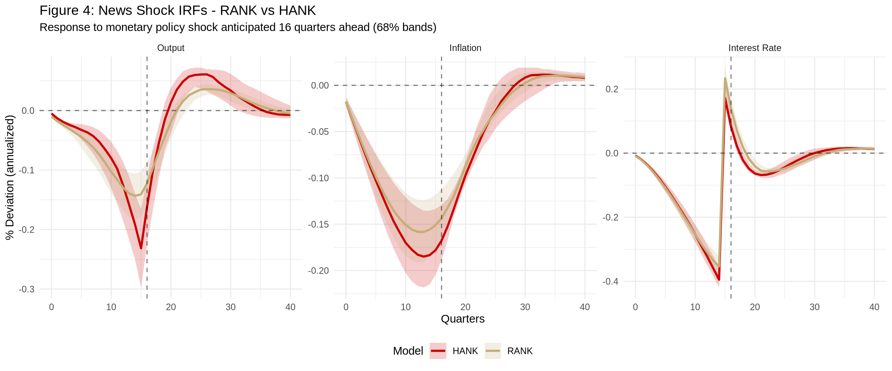
f5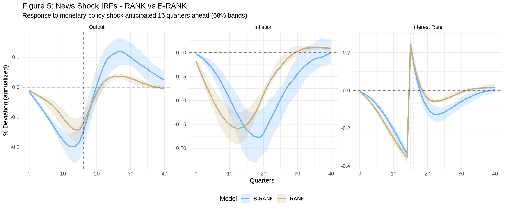
saveRDS(f4, "figure-4.rds")
saveRDS(f5, "figure-5.rds")Table 5.1: Counterfactual Second Moments
This section replicates Table 5.1 and Figure D.1, which show how business cycle statistics change under counterfactual policy rules.
Helper Function: Extract Policy IRFs
# Extract policy IRF matrices from loaded RDS data
# data: RDS previously imported from .mat file
# T_use: Horizon to use (if NULL, uses full model dimension)
# Follows import_suffstats.m with
# * Pi_m and I_m are scaled by 4 to annualize (quarterly to annual)
# * Y_m unscaled
extract_model_irfs <- function(data, T_use = NULL) {
# Data has Pi.m.collector, Y.m.collector, R.n.m.collector
# Get full dimensions
T_full <- dim(data$Pi.m.collector)[1]
if (is.null(T_use)) T_use <- T_full
# Extract and SCALE by 4 for Pi_m and I_m (annualize)
Pi_m_raw <- 4 * data$Pi.m.collector[1:T_use, 1:T_use, ]
Y_m_raw <- data$Y.m.collector[1:T_use, 1:T_use, ]
I_m_raw <- 4 * data$R.n.m.collector[1:T_use, 1:T_use, ]
n_draws <- dim(Pi_m_raw)[3]
list(
Pi_m = lapply(seq_len(n_draws), function(i) Pi_m_raw[, , i]),
Y_m = lapply(seq_len(n_draws), function(i) Y_m_raw[, , i]),
I_m = lapply(seq_len(n_draws), function(i) I_m_raw[, , i]),
n_draws = n_draws,
T = T_use
)
}Prepare Baseline Wold IRFs
# Extract IRFs from all models mixture first to get the model horizon T
irfs_all <- extract_model_irfs(all_models, T_use = NULL)
T_hor <- irfs_all$T
n_shocks <- dim(IRF_OLS)[2]
# Extract relevant variables: inflation (9), output (2), interest rate (10)
wold_base <- IRF_OLS[c(9, 2, 10), , 1:T_hor]Baseline Business Cycle Statistics
# Compute baseline VMA-implied covariance
cov_base <- matrix(0, 3, 3)
for (h in 1:T_hor) {
Theta_h <- wold_base[, , h]
cov_base <- cov_base + Theta_h %*% t(Theta_h)
}
# Standard deviations and correlations
std_base <- sqrt(diag(cov_base))
corr_base <- cov_to_corr_r(cov_base)
var_names_short <- c("Output", "Inflation", "Rate")
names(std_base) <- var_names_short
dimnames(corr_base) <- list(var_names_short, var_names_short)Set Up Policy Rule
# Set up optimal policy (dual mandate) weights
# Loss = sum_t beta^t * (lambda_pi * pi_t^2 + lambda_y * y_t^2 + lambda_di * (i_t - i_{t-1})^2)
weights <- set_optpol_weights(
T = T_hor,
lambda_pi = 1, # Weight on inflation
lambda_y = 1, # Weight on output gap
lambda_i = 0, # No penalty on interest rate level
lambda_di = 1, # Penalty on interest rate changes
beta = 1 # Discount factor
)Compute Counterfactual Wold IRFs for Each Model
# Extract IRFs from each model separately (with proper 4x scaling for Pi_m and I_m)
irfs_rank <- extract_model_irfs(rank_draws, T_use = T_hor)
irfs_hank <- extract_model_irfs(hank_draws, T_use = T_hor)
irfs_brank <- extract_model_irfs(brank_draws, T_use = T_hor)
irfs_bhank <- extract_model_irfs(bhank_draws, T_use = T_hor)
model_names <- c("RANK", "HANK", "B-RANK", "B-HANK")
model_irfs_list <- list(irfs_rank, irfs_hank, irfs_brank, irfs_bhank)
n_draws_use <- min(1000, irfs_rank$n_draws)
n_models <- 4
# Storage for counterfactual COVARIANCES by model (not std devs)
# MATLAB takes quantile of covariance FIRST, then sqrt
# Dimensions: (variable, variable, draw, model)
cov_cnfctl_models <- array(NA, dim = c(3, 3, n_draws_use, n_models))
for (m in seq_len(n_models)) {
irfs_m <- model_irfs_list[[m]]
for (d in seq_len(n_draws_use)) {
Pi_m <- irfs_m$Pi_m[[d]]
Y_m <- irfs_m$Y_m[[d]]
I_m <- irfs_m$I_m[[d]]
# Compute counterfactual Wold for all shocks
wold_cnfctl_d <- array(0, dim = c(3, n_shocks, T_hor))
for (s in seq_len(n_shocks)) {
pi_z <- wold_base[1, s, ]
y_z <- wold_base[2, s, ]
i_z <- wold_base[3, s, ]
result <- compute_optpol(pi_z, y_z, i_z, Pi_m, Y_m, I_m, weights)
wold_cnfctl_d[1, s, ] <- result$pi_z_optpol
wold_cnfctl_d[2, s, ] <- result$y_z_optpol
wold_cnfctl_d[3, s, ] <- result$i_z_optpol
}
# Compute VMA covariance
cov_d <- matrix(0, 3, 3)
for (h in seq_len(T_hor)) {
Theta_h <- wold_cnfctl_d[, , h]
cov_d <- cov_d + Theta_h %*% t(Theta_h)
}
# Store full covariance (not just diagonal)
cov_cnfctl_models[, , d, m] <- cov_d
}
}Load Empirical Sufficient Statistics (Semi-structural)
Following import_suffstats_emp.m, we load the pre-computed empirical monetary policy IRFs from the MATLAB BVAR estimation. This ensures exact replication results by using the same posterior draws.
# Load pre-computed MATLAB empirical IRF draws
# These were computed by run_var_mp_adrr.m and saved in IRFs_adrr_results.mat
# Converted to RDS format for R usage
emp_irfs <- readRDS(file.path(suff_stats_path, "empirical_irfs_adrr.rds"))
# Dimensions: (T x 1 x n_shocks x n_draws) = (200 x 1 x 2 x 1000)
# No need to multiply or divide by 4 since empirical IRFs are all measured
# in annualized terms (import_suffstats_emp.m)
# Extract and reshape draws to (T x n_shocks x n_draws)
Pi_m_emp_draws <- drop(emp_irfs$Pi.m.draws.emp) # Inflation
Y_m_emp_draws <- drop(emp_irfs$Y.m.draws.emp) # Output
I_m_emp_draws <- drop(emp_irfs$R.n.m.draws.emp) # Interest Rate
# Get dimensions
T_emp_use <- dim(Pi_m_emp_draws)[1]
n_shocks_emp <- dim(Pi_m_emp_draws)[2]
n_draws_emp <- dim(Pi_m_emp_draws)[3]# Compute counterfactual for empirical (semi-structural) approach
n_draws_emp_use <- min(1000, n_draws_emp)
# Verify dimension consistency before proceeding
stopifnot("T_emp_use must equal T_hor for semi-structural to work. Check model sufficient statistics dimensions." = T_emp_use == T_hor)
# Following MATLAB exactly - use the SAME weights as model computation
# MATLAB does NOT create new weights for the empirical section; it reuses
# the weights created earlier with T = model_T
weights_emp <- weights
# Storage for empirical counterfactual COVARIANCES (not std devs)
cov_cnfctl_emp <- array(NA, dim = c(3, 3, n_draws_emp_use))
for (d in seq_len(n_draws_emp_use)) {
# Get empirical IRFs for this draw
# Note: dimensions are (T x n_shocks) for each variable
Pi_m <- Pi_m_emp_draws[, , d]
Y_m <- Y_m_emp_draws[, , d]
I_m <- I_m_emp_draws[, , d]
# Compute counterfactual Wold for all original shocks
# Use T_hor to match MATLAB (should equal T_emp_use = 200)
wold_cnfctl_d <- array(0, dim = c(3, n_shocks, T_hor))
for (s in seq_len(n_shocks)) {
# MATLAB: pi_z = squeeze(wold_base(1,i_shock,:)) - uses ALL of wold_base
# wold_base has shape (3, n_shocks, T_hor)
pi_z <- wold_base[1, s, ]
y_z <- wold_base[2, s, ]
i_z <- wold_base[3, s, ]
result <- compute_optpol(pi_z, y_z, i_z, Pi_m, Y_m, I_m, weights_emp)
wold_cnfctl_d[1, s, ] <- result$pi_z_optpol
wold_cnfctl_d[2, s, ] <- result$y_z_optpol
wold_cnfctl_d[3, s, ] <- result$i_z_optpol
}
# Compute VMA covariance - sum over T_hor horizons
cov_d <- matrix(0, 3, 3)
for (h in seq_len(T_hor)) {
Theta_h <- wold_cnfctl_d[, , h]
cov_d <- cov_d + Theta_h %*% t(Theta_h)
}
# Store full covariance (not just diagonal)
cov_cnfctl_emp[, , d] <- cov_d
}Compute Summary Statistics
# MATLAB approach: take quantiles of COVARIANCE, then sqrt of diagonal
# This differs from taking sqrt first then quantile (Jensen's inequality)
# Summary statistics for each model
std_model_summary <- list()
for (m in seq_len(n_models)) {
# Extract covariance matrices for this model: (3, 3, n_draws)
cov_m <- cov_cnfctl_models[, , , m]
# Compute quantiles of covariance for each element
cov_lb <- apply(cov_m, c(1, 2), quantile, probs = 0.16)
cov_med <- apply(cov_m, c(1, 2), quantile, probs = 0.5)
cov_ub <- apply(cov_m, c(1, 2), quantile, probs = 0.84)
# Take sqrt of diagonal AFTER taking quantile
std_model_summary[[model_names[m]]] <- list(
med = sqrt(diag(cov_med)),
lb = sqrt(diag(cov_lb)),
ub = sqrt(diag(cov_ub))
)
}
# Summary for empirical (semi-structural)
# Compute quantiles of covariance for each element
cov_emp_lb <- apply(cov_cnfctl_emp, c(1, 2), quantile, probs = 0.16)
cov_emp_med <- apply(cov_cnfctl_emp, c(1, 2), quantile, probs = 0.5)
cov_emp_ub <- apply(cov_cnfctl_emp, c(1, 2), quantile, probs = 0.84)
# Take sqrt of diagonal AFTER taking quantile
std_emp_summary <- list(
med = sqrt(diag(cov_emp_med)),
lb = sqrt(diag(cov_emp_lb)),
ub = sqrt(diag(cov_emp_ub))
)Table 5.1 Output
# Create Table 5.1 as a data frame
# Helper to format median with CI
fmt_ci <- function(med, lb, ub) {
sprintf("%.3f (%.3f, %.3f)", med, lb, ub)
}
# Build rows for each model
table_rows <- list()
# Baseline (actual)
table_rows[[1]] <- data.frame(
Approach = "Actual",
Model = "",
Inflation = sprintf("%.3f", std_base[1]),
Output = sprintf("%.3f", std_base[2]),
`Interest Rate` = sprintf("%.3f", std_base[3]),
check.names = FALSE
)
# Hybrid models
for (m_name in model_names) {
s <- std_model_summary[[m_name]]
table_rows[[length(table_rows) + 1]] <- data.frame(
Approach = "Hybrid",
Model = m_name,
Inflation = fmt_ci(s$med[1], s$lb[1], s$ub[1]),
Output = fmt_ci(s$med[2], s$lb[2], s$ub[2]),
`Interest Rate` = fmt_ci(s$med[3], s$lb[3], s$ub[3]),
check.names = FALSE
)
}
# Semi-structural
table_rows[[length(table_rows) + 1]] <- data.frame(
Approach = "Semi-structural",
Model = "",
Inflation = fmt_ci(std_emp_summary$med[1], std_emp_summary$lb[1], std_emp_summary$ub[1]),
Output = fmt_ci(std_emp_summary$med[2], std_emp_summary$lb[2], std_emp_summary$ub[2]),
`Interest Rate` = fmt_ci(std_emp_summary$med[3], std_emp_summary$lb[3], std_emp_summary$ub[3]),
check.names = FALSE
)
# Combine into single data frame
table_5_1 <- do.call(rbind, table_rows)
rownames(table_5_1) <- NULL
table_5_1 Approach Model Inflation Output
1 Actual 1.978 3.050
2 Hybrid RANK 1.674 (1.607, 1.772) 1.795 (1.592, 2.091)
3 Hybrid HANK 1.634 (1.558, 1.733) 1.774 (1.554, 2.101)
4 Hybrid B-RANK 1.679 (1.582, 1.858) 1.577 (1.340, 1.831)
5 Hybrid B-HANK 1.666 (1.595, 1.844) 1.543 (1.297, 1.811)
6 Semi-structural 1.795 (1.628, 1.913) 2.153 (1.913, 2.422)
Interest Rate
1 2.927
2 3.748 (3.408, 4.048)
3 3.496 (3.203, 3.758)
4 3.692 (3.328, 4.117)
5 3.530 (3.214, 3.871)
6 2.841 (2.512, 3.183)saveRDS(table_5_1, "table-5-1.rds")Note: Posterior median with 16th and 84th percentiles in parentheses. Policy rule minimizes loss function with equal weight on inflation, output gap, and interest rate smoothing.
Visualize Distribution of Standard Deviations (Figure D.1)
# Compute std devs from covariance matrices for plotting
# For models: sqrt(diag(cov)) for each draw
std_cnfctl_models_plot <- array(NA, dim = c(3, n_draws_use, n_models))
for (m in seq_len(n_models)) {
for (d in seq_len(n_draws_use)) {
std_cnfctl_models_plot[, d, m] <- sqrt(diag(cov_cnfctl_models[, , d, m]))
}
}
# Prepare data for plotting - only RANK model for kernel density (blue)
# Variable order in wold_base: [1]=Inflation, [2]=Output, [3]=Rate
# But var_names_short is ["Output", "Inflation", "Rate"] for display
# Need to reorder: Output=row2, Inflation=row1, Rate=row3
df_rank_density <- data.frame(
variable = rep(var_names_short, each = n_draws_use),
std_cnfctl = c(std_cnfctl_models_plot[2, , 1], # Output (row 2)
std_cnfctl_models_plot[1, , 1], # Inflation (row 1)
std_cnfctl_models_plot[3, , 1]) # Rate (row 3)
)
df_rank_density$variable <- factor(df_rank_density$variable, levels = var_names_short)
# Use std_model_summary which correctly computes sqrt(median(cov))
# Reorder to match var_names_short: [Output, Inflation, Rate]
# std_model_summary has order [Inflation, Output, Rate] from wold_base
mode_rank <- std_model_summary[["RANK"]]$med[c(2, 1, 3)] # RANK
mode_hank <- std_model_summary[["HANK"]]$med[c(2, 1, 3)] # HANK
mode_brank <- std_model_summary[["B-RANK"]]$med[c(2, 1, 3)] # B-RANK
mode_bhank <- std_model_summary[["B-HANK"]]$med[c(2, 1, 3)] # B-HANK
# Create data frame for vertical lines (posterior medians)
df_modes <- data.frame(
variable = factor(rep(var_names_short, 4), levels = var_names_short),
mode_val = c(mode_rank, mode_hank, mode_brank, mode_bhank),
model_type = rep(c("RANK", "HANK", "B-RANK", "B-HANK"), each = 3)
)
# Baseline values (black dashed)
# std_base has order [Inflation, Output, Rate], reorder to [Output, Inflation, Rate]
df_base <- data.frame(
variable = factor(var_names_short, levels = var_names_short),
std_base = std_base[c(2, 1, 3)]
)
fd1 <- ggplot() +
# Blue kernel density for baseline RANK
geom_density(data = df_rank_density, aes(x = std_cnfctl),
fill = "#4A90D9", color = "#4A90D9", alpha = 0.2) +
# Black dashed: baseline (actual data)
geom_vline(data = df_base, aes(xintercept = std_base),
color = "black", linetype = "dashed", linewidth = 1) +
# Beige: RANK models posterior modes
geom_vline(data = df_modes[df_modes$model_type == "RANK", ],
aes(xintercept = mode_val), color = "#C4AE78", linewidth = 1) +
geom_vline(data = df_modes[df_modes$model_type == "B-RANK", ],
aes(xintercept = mode_val), color = "#C4AE78", linewidth = 1, linetype = "dashed") +
# Red: HANK models posterior modes
geom_vline(data = df_modes[df_modes$model_type == "HANK", ],
aes(xintercept = mode_val), color = "#CC0000", linewidth = 1) +
geom_vline(data = df_modes[df_modes$model_type == "B-HANK", ],
aes(xintercept = mode_val), color = "#CC0000", linewidth = 1, linetype = "dashed") +
facet_wrap(~variable, scales = "free", ncol = 3) +
labs(
title = "Figure D.1: Counterfactual Unconditional Volatilities",
subtitle = "Black = observed policy; Blue = RANK posterior density; Solid Beige = RANK; Dashed Beige = B-RANK; Solid Red = HANK; Dashed Red = B-HANK",
x = "Standard Deviation",
y = "Density"
) +
theme_minimal()
fd1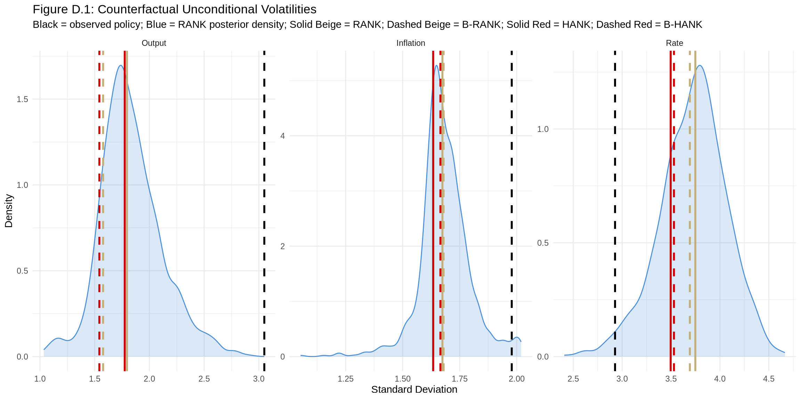
saveRDS(fd1, "figure-d1.rds")Figure 6: Main Business Cycle Shock
Analysis of counterfactual responses to the main business cycle shock (Angeletos, Collard & Dellas, 2020 - the shock explaining most of business cycle dynamics).
# The "main business cycle shock" is identified as the first principal
# component of structural shocks
# For simplicity, we use the shock explaining most variance
# Compute variance explained by each shock
var_explained <- numeric(n_shocks)
for (s in seq_len(n_shocks)) {
shock_irf <- IRF_OLS[, s, 1:T_hor]
# Total variance contribution
var_s <- sum(shock_irf^2)
var_explained[s] <- var_s
}
# Find the main shock (highest variance)
mbc_shock_idx <- which.max(var_explained)
cat("Main business cycle shock index:", mbc_shock_idx,
"(", series_names[mbc_shock_idx], ")\n")Main business cycle shock index: 1 ( Unemployment )cat("Variance share:", round(var_explained[mbc_shock_idx] / sum(var_explained) * 100, 1), "%\n")Variance share: 24.2 %# Extract baseline path for this shock
pi_mbc <- wold_base[1, mbc_shock_idx, ]
y_mbc <- wold_base[2, mbc_shock_idx, ]
i_mbc <- wold_base[3, mbc_shock_idx, ]
# --- RANK (hybrid) counterfactual ---
n_draws_fig6 <- min(1000, irfs_rank$n_draws)
pi_cnfctl_rank <- matrix(NA, T_hor, n_draws_fig6)
y_cnfctl_rank <- matrix(NA, T_hor, n_draws_fig6)
i_cnfctl_rank <- matrix(NA, T_hor, n_draws_fig6)
for (d in seq_len(n_draws_fig6)) {
Pi_m <- irfs_rank$Pi_m[[d]]
Y_m <- irfs_rank$Y_m[[d]]
I_m <- irfs_rank$I_m[[d]]
result <- compute_optpol(
pi_mbc, y_mbc, i_mbc,
Pi_m, Y_m, I_m,
weights
)
pi_cnfctl_rank[, d] <- result$pi_z_optpol
y_cnfctl_rank[, d] <- result$y_z_optpol
i_cnfctl_rank[, d] <- result$i_z_optpol
}
# RANK summary statistics (blue)
pi_cnfctl_rank_med <- apply(pi_cnfctl_rank, 1, median)
pi_cnfctl_rank_lb <- apply(pi_cnfctl_rank, 1, quantile, 0.16)
pi_cnfctl_rank_ub <- apply(pi_cnfctl_rank, 1, quantile, 0.84)
y_cnfctl_rank_med <- apply(y_cnfctl_rank, 1, median)
y_cnfctl_rank_lb <- apply(y_cnfctl_rank, 1, quantile, 0.16)
y_cnfctl_rank_ub <- apply(y_cnfctl_rank, 1, quantile, 0.84)
i_cnfctl_rank_med <- apply(i_cnfctl_rank, 1, median)
i_cnfctl_rank_lb <- apply(i_cnfctl_rank, 1, quantile, 0.16)
i_cnfctl_rank_ub <- apply(i_cnfctl_rank, 1, quantile, 0.84)
# --- Empirical counterfactual (orange) ---
n_draws_fig6_emp <- min(1000, n_draws_emp_use)
pi_cnfctl_emp_fig6 <- matrix(NA, T_hor, n_draws_fig6_emp)
y_cnfctl_emp_fig6 <- matrix(NA, T_hor, n_draws_fig6_emp)
i_cnfctl_emp_fig6 <- matrix(NA, T_hor, n_draws_fig6_emp)
for (d in seq_len(n_draws_fig6_emp)) {
Pi_m <- Pi_m_emp_draws[, , d]
Y_m <- Y_m_emp_draws[, , d]
I_m <- I_m_emp_draws[, , d]
result <- compute_optpol(
pi_mbc, y_mbc, i_mbc,
Pi_m, Y_m, I_m,
weights
)
pi_cnfctl_emp_fig6[, d] <- result$pi_z_optpol
y_cnfctl_emp_fig6[, d] <- result$y_z_optpol
i_cnfctl_emp_fig6[, d] <- result$i_z_optpol
}
# Empirical summary statistics (orange)
pi_cnfctl_emp_med <- apply(pi_cnfctl_emp_fig6, 1, median)
pi_cnfctl_emp_lb <- apply(pi_cnfctl_emp_fig6, 1, quantile, 0.16)
pi_cnfctl_emp_ub <- apply(pi_cnfctl_emp_fig6, 1, quantile, 0.84)
y_cnfctl_emp_med <- apply(y_cnfctl_emp_fig6, 1, median)
y_cnfctl_emp_lb <- apply(y_cnfctl_emp_fig6, 1, quantile, 0.16)
y_cnfctl_emp_ub <- apply(y_cnfctl_emp_fig6, 1, quantile, 0.84)
i_cnfctl_emp_med <- apply(i_cnfctl_emp_fig6, 1, median)
i_cnfctl_emp_lb <- apply(i_cnfctl_emp_fig6, 1, quantile, 0.16)
i_cnfctl_emp_ub <- apply(i_cnfctl_emp_fig6, 1, quantile, 0.84)IRF_hor_plot <- 30
# Build data frames for each variable (Output, Inflation, Interest Rate)
# Variable 1: Output (y)
df_output <- data.frame(
horizon = 0:IRF_hor_plot,
baseline = y_mbc[1:(IRF_hor_plot + 1)],
rank_med = y_cnfctl_rank_med[1:(IRF_hor_plot + 1)],
rank_lb = y_cnfctl_rank_lb[1:(IRF_hor_plot + 1)],
rank_ub = y_cnfctl_rank_ub[1:(IRF_hor_plot + 1)],
emp_med = y_cnfctl_emp_med[1:(IRF_hor_plot + 1)],
emp_lb = y_cnfctl_emp_lb[1:(IRF_hor_plot + 1)],
emp_ub = y_cnfctl_emp_ub[1:(IRF_hor_plot + 1)],
variable = "Output"
)
# Variable 2: Inflation (pi)
df_infl <- data.frame(
horizon = 0:IRF_hor_plot,
baseline = pi_mbc[1:(IRF_hor_plot + 1)],
rank_med = pi_cnfctl_rank_med[1:(IRF_hor_plot + 1)],
rank_lb = pi_cnfctl_rank_lb[1:(IRF_hor_plot + 1)],
rank_ub = pi_cnfctl_rank_ub[1:(IRF_hor_plot + 1)],
emp_med = pi_cnfctl_emp_med[1:(IRF_hor_plot + 1)],
emp_lb = pi_cnfctl_emp_lb[1:(IRF_hor_plot + 1)],
emp_ub = pi_cnfctl_emp_ub[1:(IRF_hor_plot + 1)],
variable = "Inflation"
)
# Variable 3: Interest Rate (i)
df_rate <- data.frame(
horizon = 0:IRF_hor_plot,
baseline = i_mbc[1:(IRF_hor_plot + 1)],
rank_med = i_cnfctl_rank_med[1:(IRF_hor_plot + 1)],
rank_lb = i_cnfctl_rank_lb[1:(IRF_hor_plot + 1)],
rank_ub = i_cnfctl_rank_ub[1:(IRF_hor_plot + 1)],
emp_med = i_cnfctl_emp_med[1:(IRF_hor_plot + 1)],
emp_lb = i_cnfctl_emp_lb[1:(IRF_hor_plot + 1)],
emp_ub = i_cnfctl_emp_ub[1:(IRF_hor_plot + 1)],
variable = "Interest Rate"
)
df_fig6 <- rbind(df_output, df_infl, df_rate)
df_fig6$variable <- factor(df_fig6$variable, levels = c("Output", "Inflation", "Interest Rate"))
f6 <- ggplot(df_fig6, aes(x = horizon)) +
# Light blue band: RANK hybrid (16th-84th percentile)
geom_ribbon(aes(ymin = rank_lb, ymax = rank_ub),
fill = "#749EB2", alpha = 0.3) +
# Light orange band: Empirical (16th-84th percentile)
geom_ribbon(aes(ymin = emp_lb, ymax = emp_ub),
fill = "#FF9933", alpha = 0.3) +
# Black dotted: baseline (Data)
geom_line(aes(y = baseline), color = "black", linetype = "dotted", linewidth = 1.2) +
# Blue solid: RANK hybrid median
geom_line(aes(y = rank_med), color = "#749EB2", linewidth = 1.2) +
# Orange solid: Empirical median
geom_line(aes(y = emp_med), color = "#FF9933", linewidth = 1.2) +
geom_hline(yintercept = 0, linetype = "solid", color = "grey70") +
facet_wrap(~variable, scales = "free_y", ncol = 3) +
labs(
title = "Figure 6: Counterfactual Response to Main Business Cycle Shock",
subtitle = "Data (black dotted); Hybrid (blue band/line); Semi-structural (orange band/line)",
x = "Horizon",
y = "% Deviation"
) +
theme_minimal(base_size = 14) +
theme(
legend.position = "bottom",
panel.grid.minor = element_blank()
)
f6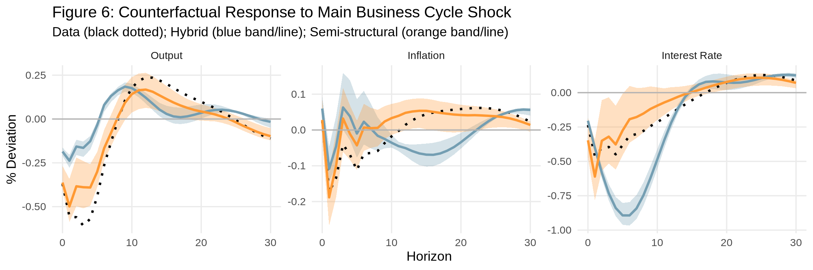
saveRDS(f6, "figure-6.rds")Figure 7: Historical Evolution (Great Recession)
Counterfactual evolution of output, inflation, and the federal funds rate in the Great Recession, under the policy rule that minimizes the loss function without any effective lower bound on rates.
# Following MATLAB: plot starts with some history lag, then shows counterfactual forecast
date_sample <- date[startdate:enddate]
# Forecast settings (matching MATLAB fcst_evol_results)
# fcst_date is 2007Q4, fcst_lag is periods of history to show before
# fcst_hor is how many quarters to forecast forward
fcst_date_val <- 2007.75 # 2007Q4 - start of Great Recession
fcst_date <- which(date_sample == fcst_date_val)
fcst_lag <- 4 # Show 4 quarters of history before forecast
fcst_hor <- 20 # Forecast 20 quarters ahead (to ~2012Q4)
# Date range for plotting
plot_start <- fcst_date - fcst_lag
plot_end <- min(fcst_date + fcst_hor - 1, length(date_sample))
plot_dates <- date_sample[plot_start:plot_end]
cat("Historical evolution settings:\n")Historical evolution settings:cat(" Forecast start:", date_sample[fcst_date], "(index", fcst_date, ")\n") Forecast start: 2007.75 (index 192 )cat(" History lag:", fcst_lag, "quarters\n") History lag: 4 quarterscat(" Forecast horizon:", fcst_hor, "quarters\n") Forecast horizon: 20 quarterscat(" Plot range:", date_sample[plot_start], "to", date_sample[plot_end], "\n") Plot range: 2006.75 to 2012.5 # Extract full history (indices: 9=Inflation, 2=Output, 10=Rate)
pi_history <- vardata_dt[, 9]
y_history <- vardata_dt[, 2]
i_history <- vardata_dt[, 10]
# For historical evolution, we need VAR forecasts at each date from fcst_date onwards
forecast_hor_model <- T_hor
# Compute VAR forecast at each date in the forecast window
fcst_pi <- matrix(NA, forecast_hor_model, fcst_hor)
fcst_y <- matrix(NA, forecast_hor_model, fcst_hor)
fcst_i <- matrix(NA, forecast_hor_model, fcst_hor)
# Variable indices: [9] Inflation, [2] Output, [10] Interest Rate
var_pi_idx <- 9
var_y_idx <- 2
var_i_idx <- 10
for (t_idx in seq_len(fcst_hor)) {
t_fcst <- fcst_date + t_idx - 1
if (t_fcst > nrow(vardata_dt)) break
# Simple forecast using VAR coefficients
fcst_result <- var_fcst(
vardata_dt, n_lags, constant,
bvar_result$B_OLS, t_fcst, forecast_hor_model,
include_current = FALSE
)
fcst_pi[, t_idx] <- fcst_result[, var_pi_idx]
fcst_y[, t_idx] <- fcst_result[, var_y_idx]
fcst_i[, t_idx] <- fcst_result[, var_i_idx]
}
# Actual number of forecast periods we can compute
n_fcst_actual <- min(fcst_hor, nrow(vardata_dt) - fcst_date + 1)
# Truncate forecast matrices to valid columns
fcst_pi <- fcst_pi[, 1:n_fcst_actual, drop = FALSE]
fcst_y <- fcst_y[, 1:n_fcst_actual, drop = FALSE]
fcst_i <- fcst_i[, 1:n_fcst_actual, drop = FALSE]
# Update plot_end to match actual data range
plot_end <- fcst_date + n_fcst_actual - 1
plot_dates <- date_sample[plot_start:plot_end]# Helper function to compute historical counterfactual evolution
compute_hist_evol <- function(irfs_model, fcst_pi, fcst_y, fcst_i, weights, n_draws_use) {
n_fcst <- ncol(fcst_pi)
T_h <- nrow(fcst_pi)
pi_cnfctl <- matrix(NA, n_fcst, n_draws_use)
y_cnfctl <- matrix(NA, n_fcst, n_draws_use)
i_cnfctl <- matrix(NA, n_fcst, n_draws_use)
for (d in seq_len(n_draws_use)) {
Pi_m <- irfs_model$Pi_m[[d]]
Y_m <- irfs_model$Y_m[[d]]
I_m <- irfs_model$I_m[[d]]
# First period
pi_x <- fcst_pi[, 1]
y_x <- fcst_y[, 1]
i_x <- fcst_i[, 1]
result <- compute_optpol(pi_x, y_x, i_x, Pi_m, Y_m, I_m, weights)
pi_path <- result$pi_z_optpol
y_path <- result$y_z_optpol
i_path <- result$i_z_optpol
pi_cnfctl[1, d] <- pi_path[1]
y_cnfctl[1, d] <- y_path[1]
i_cnfctl[1, d] <- i_path[1]
# Subsequent periods: accumulate forecast revisions
for (t in 2:n_fcst) {
pi_rev <- fcst_pi[, t] - c(fcst_pi[2:T_h, t-1], 0)
y_rev <- fcst_y[, t] - c(fcst_y[2:T_h, t-1], 0)
i_rev <- fcst_i[, t] - c(fcst_i[2:T_h, t-1], 0)
result <- compute_optpol(pi_rev, y_rev, i_rev, Pi_m, Y_m, I_m, weights)
pi_path <- c(pi_path[2:T_h], 0) + result$pi_z_optpol
y_path <- c(y_path[2:T_h], 0) + result$y_z_optpol
i_path <- c(i_path[2:T_h], 0) + result$i_z_optpol
pi_cnfctl[t, d] <- pi_path[1]
y_cnfctl[t, d] <- y_path[1]
i_cnfctl[t, d] <- i_path[1]
}
}
list(pi = pi_cnfctl, y = y_cnfctl, i = i_cnfctl)
}
# Number of draws to use
n_draws_fig7 <- min(1000, irfs_rank$n_draws)
# --- Compute counterfactuals for each model ---
# I pre-save these as these are very demanding to run!
fout <- c("evol_rank.rds", "evol_hank.rds", "evol_brank.rds", "evol_bhank.rds")
# RANK (for blue bands)
if (!file.exists(fout[1])) {
evol_rank <- compute_hist_evol(irfs_rank, fcst_pi, fcst_y, fcst_i, weights, n_draws_fig7)
saveRDS(evol_rank, fout[1])
} else {
evol_rank <- readRDS(fout[1])
}
# HANK
if (!file.exists(fout[2])) {
evol_hank <- compute_hist_evol(irfs_hank, fcst_pi, fcst_y, fcst_i, weights, n_draws_fig7)
saveRDS(evol_hank, fout[2])
} else {
evol_hank <- readRDS(fout[2])
}
# B-RANK
if (!file.exists(fout[3])) {
evol_brank <- compute_hist_evol(irfs_brank, fcst_pi, fcst_y, fcst_i, weights, n_draws_fig7)
saveRDS(evol_brank, fout[3])
} else {
evol_brank <- readRDS(fout[3])
}
# B-HANK
if (!file.exists(fout[4])) {
evol_bhank <- compute_hist_evol(irfs_bhank, fcst_pi, fcst_y, fcst_i, weights, n_draws_fig7)
saveRDS(evol_bhank, fout[4])
} else {
evol_bhank <- readRDS(fout[4])
}
# --- Compute empirical (semi-structural) counterfactual ---
n_draws_fig7_emp <- min(1000, n_draws_emp_use)
pi_cnfctl_emp_evol <- matrix(NA, n_fcst_actual, n_draws_fig7_emp)
y_cnfctl_emp_evol <- matrix(NA, n_fcst_actual, n_draws_fig7_emp)
i_cnfctl_emp_evol <- matrix(NA, n_fcst_actual, n_draws_fig7_emp)
for (d in seq_len(n_draws_fig7_emp)) {
Pi_m <- Pi_m_emp_draws[, , d]
Y_m <- Y_m_emp_draws[, , d]
I_m <- I_m_emp_draws[, , d]
# First period
pi_x <- fcst_pi[, 1]
y_x <- fcst_y[, 1]
i_x <- fcst_i[, 1]
result <- compute_optpol(pi_x, y_x, i_x, Pi_m, Y_m, I_m, weights)
pi_path <- result$pi_z_optpol
y_path <- result$y_z_optpol
i_path <- result$i_z_optpol
pi_cnfctl_emp_evol[1, d] <- pi_path[1]
y_cnfctl_emp_evol[1, d] <- y_path[1]
i_cnfctl_emp_evol[1, d] <- i_path[1]
for (t in 2:n_fcst_actual) {
pi_rev <- fcst_pi[, t] - c(fcst_pi[2:forecast_hor_model, t-1], 0)
y_rev <- fcst_y[, t] - c(fcst_y[2:forecast_hor_model, t-1], 0)
i_rev <- fcst_i[, t] - c(fcst_i[2:forecast_hor_model, t-1], 0)
result <- compute_optpol(pi_rev, y_rev, i_rev, Pi_m, Y_m, I_m, weights)
pi_path <- c(pi_path[2:forecast_hor_model], 0) + result$pi_z_optpol
y_path <- c(y_path[2:forecast_hor_model], 0) + result$y_z_optpol
i_path <- c(i_path[2:forecast_hor_model], 0) + result$i_z_optpol
pi_cnfctl_emp_evol[t, d] <- pi_path[1]
y_cnfctl_emp_evol[t, d] <- y_path[1]
i_cnfctl_emp_evol[t, d] <- i_path[1]
}
}
# --- Summary statistics ---
# RANK bands (blue)
pi_rank_med <- apply(evol_rank$pi, 1, median)
pi_rank_lb <- apply(evol_rank$pi, 1, quantile, 0.16)
pi_rank_ub <- apply(evol_rank$pi, 1, quantile, 0.84)
y_rank_med <- apply(evol_rank$y, 1, median)
y_rank_lb <- apply(evol_rank$y, 1, quantile, 0.16)
y_rank_ub <- apply(evol_rank$y, 1, quantile, 0.84)
i_rank_med <- apply(evol_rank$i, 1, median)
i_rank_lb <- apply(evol_rank$i, 1, quantile, 0.16)
i_rank_ub <- apply(evol_rank$i, 1, quantile, 0.84)
# Model medians for vertical lines
pi_hank_med <- apply(evol_hank$pi, 1, median)
y_hank_med <- apply(evol_hank$y, 1, median)
i_hank_med <- apply(evol_hank$i, 1, median)
pi_brank_med <- apply(evol_brank$pi, 1, median)
y_brank_med <- apply(evol_brank$y, 1, median)
i_brank_med <- apply(evol_brank$i, 1, median)
pi_bhank_med <- apply(evol_bhank$pi, 1, median)
y_bhank_med <- apply(evol_bhank$y, 1, median)
i_bhank_med <- apply(evol_bhank$i, 1, median)
# Empirical median (orange)
pi_emp_evol_med <- apply(pi_cnfctl_emp_evol, 1, median)
y_emp_evol_med <- apply(y_cnfctl_emp_evol, 1, median)
i_emp_evol_med <- apply(i_cnfctl_emp_evol, 1, median)
# Actual history for the period fcst_date - fcst_lag : fcst_date - 1
# (these are prepended to the counterfactual line for visual continuity)
pi_actual_hist <- pi_history[(fcst_date - fcst_lag):(fcst_date - 1)]
y_actual_hist <- y_history[(fcst_date - fcst_lag):(fcst_date - 1)]
i_actual_hist <- i_history[(fcst_date - fcst_lag):(fcst_date - 1)]
# Actual data for the full plot period (for the black line)
# This shows what actually happened
pi_actual <- pi_history[plot_start:plot_end]
y_actual <- y_history[plot_start:plot_end]
i_actual <- i_history[plot_start:plot_end]# Colors matching MATLAB
col_black <- "black"
col_beige <- "#C4AE78"
col_red <- "#CC0000"
col_blue <- "#749EB2"
col_lblue <- scales::alpha(col_blue, 0.3)
col_orange <- "#FF9933"
# Create NA-padded series for counterfactuals (fcst_lag periods of NA, then counterfactual)
n_plot <- length(plot_dates)
n_hist_pad <- fcst_lag
# Helper to prepend NA padding
pad_cnfctl <- function(x) c(rep(NA, n_hist_pad), x)
# Build data for Output panel
df_output <- data.frame(
date = plot_dates,
history = y_actual,
rank_med = pad_cnfctl(y_rank_med),
rank_lb = pad_cnfctl(y_rank_lb),
rank_ub = pad_cnfctl(y_rank_ub),
hank_med = pad_cnfctl(y_hank_med),
brank_med = pad_cnfctl(y_brank_med),
bhank_med = pad_cnfctl(y_bhank_med),
emp_med = pad_cnfctl(y_emp_evol_med),
variable = "Output"
)
# Build data for Inflation panel
df_infl <- data.frame(
date = plot_dates,
history = pi_actual,
rank_med = pad_cnfctl(pi_rank_med),
rank_lb = pad_cnfctl(pi_rank_lb),
rank_ub = pad_cnfctl(pi_rank_ub),
hank_med = pad_cnfctl(pi_hank_med),
brank_med = pad_cnfctl(pi_brank_med),
bhank_med = pad_cnfctl(pi_bhank_med),
emp_med = pad_cnfctl(pi_emp_evol_med),
variable = "Inflation"
)
# Build data for Interest Rate panel
df_rate <- data.frame(
date = plot_dates,
history = i_actual,
rank_med = pad_cnfctl(i_rank_med),
rank_lb = pad_cnfctl(i_rank_lb),
rank_ub = pad_cnfctl(i_rank_ub),
hank_med = pad_cnfctl(i_hank_med),
brank_med = pad_cnfctl(i_brank_med),
bhank_med = pad_cnfctl(i_bhank_med),
emp_med = pad_cnfctl(i_emp_evol_med),
variable = "Interest Rate"
)
df_fig7 <- rbind(df_output, df_infl, df_rate)
df_fig7$variable <- factor(df_fig7$variable, levels = c("Output", "Inflation", "Interest Rate"))
# For clarity, I opted to split this into sub-plots
# ggplot(df_fig7, aes(x = date)) +
# # Blue band: RANK 16th-84th percentile
# geom_ribbon(aes(ymin = rank_lb, ymax = rank_ub), fill = col_blue, alpha = 0.3) +
# # Beige solid: RANK model median
# geom_line(aes(y = rank_med), color = col_beige, linewidth = 1.2) +
# # Beige dashed: B-RANK model median
# geom_line(aes(y = brank_med), color = col_beige, linewidth = 1, linetype = "dashed") +
# # Red solid: HANK model median
# geom_line(aes(y = hank_med), color = col_red, linewidth = 1.2) +
# # Red dashed: B-HANK model median
# geom_line(aes(y = bhank_med), color = col_red, linewidth = 1.2, linetype = "dashed") +
# # Orange solid: Empirical/semi-structural median
# geom_line(aes(y = emp_med), color = col_orange, linewidth = 1.2) +
# # Black solid: actual history
# geom_line(aes(y = history), color = col_black, linewidth = 1.2) +
# geom_hline(yintercept = 0, color = "grey70") +
# facet_wrap(~variable, scales = "free_y", ncol = 3) +
# labs(
# title = "Figure 7: Historical Evolution Under Counterfactual Policy (Great Recession)",
# subtitle = "Black: data; Beige: RANK (solid/dashed=behavioral); Red: HANK; Blue: RANK bands; Orange: semi-structural",
# x = "Date",
# y = "% Deviation"
# ) +
# theme_minimal(base_size = 14) +
# theme(
# legend.position = "bottom",
# panel.grid.minor = element_blank()
# )
f7_1 <- ggplot(df_fig7, aes(x = date)) +
# Blue band: RANK 16th-84th percentile
geom_ribbon(aes(ymin = rank_lb, ymax = rank_ub), fill = col_blue, alpha = 0.3) +
# Beige solid: RANK model median
geom_line(aes(y = rank_med), color = col_beige, linewidth = 1.2) +
# Beige dashed: B-RANK model median
geom_line(aes(y = brank_med), color = col_beige, linewidth = 1, linetype = "dashed") +
# Black solid: actual history
geom_line(aes(y = history), color = col_black, linewidth = 1.2) +
geom_hline(yintercept = 0, color = "grey70") +
facet_wrap(~variable, scales = "free_y", ncol = 3) +
labs(
title = "Figure 7: Historical Evolution Under Counterfactual Policy (Great Recession) - RANK",
subtitle = "Black: data; Beige: RANK (dashed=behavioral); Blue: RANK bands",
x = "Date",
y = "% Deviation"
) +
theme_minimal(base_size = 14) +
theme(
legend.position = "bottom",
panel.grid.minor = element_blank()
)
f7_2 <- ggplot(df_fig7, aes(x = date)) +
# Red solid: HANK model median
geom_line(aes(y = hank_med), color = col_red, linewidth = 1.2) +
# Red dashed: B-HANK model median
geom_line(aes(y = bhank_med), color = col_red, linewidth = 1.2, linetype = "dashed") +
# Black solid: actual history
geom_line(aes(y = history), color = col_black, linewidth = 1.2) +
geom_hline(yintercept = 0, color = "grey70") +
facet_wrap(~variable, scales = "free_y", ncol = 3) +
labs(
title = "Figure 7: Historical Evolution Under Counterfactual Policy (Great Recession) - HANK",
subtitle = "Black: data; Red: HANK (dashed=behavioral)",
x = "Date",
y = "% Deviation"
) +
theme_minimal(base_size = 14) +
theme(
legend.position = "bottom",
panel.grid.minor = element_blank()
)
f7_3 <- ggplot(df_fig7, aes(x = date)) +
# Orange solid: Empirical/semi-structural median
geom_line(aes(y = emp_med), color = col_orange, linewidth = 1.2) +
# Black solid: actual history
geom_line(aes(y = history), color = col_black, linewidth = 1.2) +
geom_hline(yintercept = 0, color = "grey70") +
facet_wrap(~variable, scales = "free_y", ncol = 3) +
labs(
title = "Figure 7: Historical Evolution Under Counterfactual Policy (Great Recession) - Semi-Structural",
subtitle = "Black: data; Orange: semi-structural",
x = "Date",
y = "% Deviation"
) +
theme_minimal(base_size = 14) +
theme(
legend.position = "bottom",
panel.grid.minor = element_blank()
)
f7_1Warning: Removed 12 rows containing missing values or values outside the scale range
(`geom_ribbon()`).Warning: Removed 12 rows containing missing values or values outside the scale range
(`geom_line()`).
Removed 12 rows containing missing values or values outside the scale range
(`geom_line()`).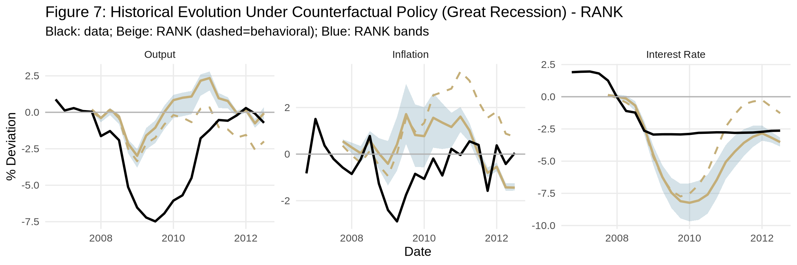
f7_2Warning: Removed 12 rows containing missing values or values outside the scale range
(`geom_line()`).
Removed 12 rows containing missing values or values outside the scale range
(`geom_line()`).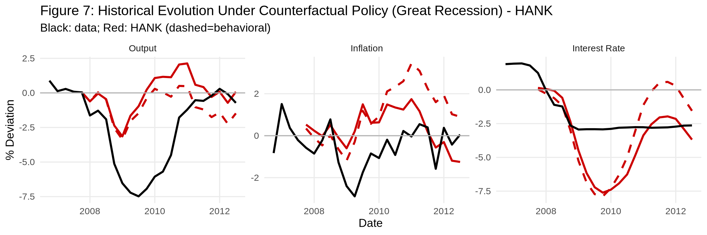
f7_3Warning: Removed 12 rows containing missing values or values outside the scale range
(`geom_line()`).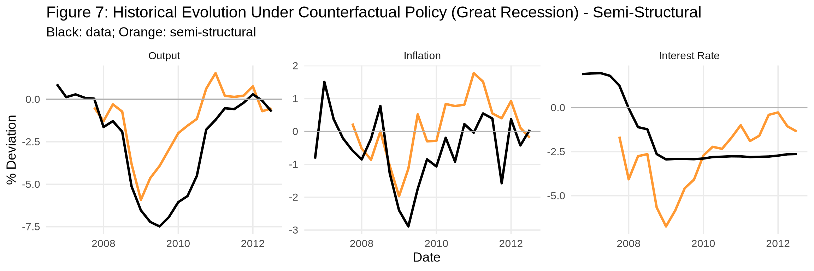
saveRDS(list(f7_1 = f7_1, f7_2 = f7_2, f7_3 = f7_3), "figure-7.rds")Figure 8: Historical Scenario (Post-COVID Inflation)
Counterfactual projections of output, inflation, and the federal funds rate in the post-COVID inflationary episode, under the policy rule that minimizes the loss function. Following get_historical_scenario_b.m, we show:
# Following MATLAB get_historical_scenario_b.m structure
# Figure 8 uses 2021Q2 as the forecast origin (matching MATLAB's enddate = 2021.25)
# Sample extends to 2021Q2 (matching MATLAB run_var_fcst_scenario.m)
enddate_fig8 <- which(date == 2021.25) # 2021Q2 is the forecast origin
# Re-transform data for extended sample
vardata_fig8 <- vardata_full[startdate:enddate_fig8, ]
# Detrend and KEEP the coefficients (like MATLAB det_coeff)
detrend_result_fig8 <- detrend(vardata_fig8, const_type = 2)
vardata_dt_fig8 <- detrend_result_fig8$Res
det_coeff_fig8 <- detrend_result_fig8$Beta # [intercept; slope] for each variable
colnames(vardata_dt_fig8) <- series_names
# Date sample for Figure 8
date_sample_fig8 <- date[startdate:enddate_fig8]
# Use the last date in sample (2021Q2) as forecast origin - matching MATLAB
scenario_date <- nrow(vardata_dt_fig8)
fcst_lag <- 10 # MATLAB uses fcst_lag = 10 (not 12)
fcst_hor_fig8 <- min(20, T_hor) # Forecast horizon for plotting
# Build extended X matrix for deterministic trend (like MATLAB det_X_ext)
# For const_type = 2: X = [1, t] where t = 1, 2, ..., T
T_fig8 <- nrow(vardata_fig8)
det_X_fig8 <- cbind(1, seq_len(T_fig8))
# Extend X matrix for forecast horizon
det_X_ext_fig8 <- cbind(1, seq_len(T_fig8 + fcst_hor_fig8))
# Re-estimate VAR on extended sample for Figure 8
bvar_result_fig8 <- estimate_bvar(vardata_dt_fig8, n_lags, constant, n_draws = 0)
# Generate baseline forecast from final date
fcst_scenario <- var_fcst(
vardata_dt_fig8, n_lags, constant,
bvar_result_fig8$B_OLS, scenario_date, T_hor,
include_current = TRUE
)
# Variable indices: [9] Inflation, [2] Output, [10] Interest Rate
pi_base_x <- fcst_scenario[, 9]
y_base_x <- fcst_scenario[, 2]
i_base_x <- fcst_scenario[, 10]
# Historical values for counterfactuals (detrended, for computing counterfactuals)
pi_history_fig8_dt <- vardata_dt_fig8[, 9]
y_history_fig8_dt <- vardata_dt_fig8[, 2]
i_history_fig8_dt <- vardata_dt_fig8[, 10]
# Historical values for plotting (non-detrended, to show actual levels like MATLAB)
# MATLAB adds back det_X_ext * det_coeff to show actual levels, we use non-detrended data
pi_history_fig8 <- vardata_fig8[, 9]
y_history_fig8 <- vardata_fig8[, 2]
i_history_fig8 <- vardata_fig8[, 10]
# Date range for plotting
plot_start_fig8 <- scenario_date - fcst_lag
plot_dates_fig8 <- c(date_sample_fig8[plot_start_fig8:scenario_date],
date_sample_fig8[scenario_date] + (1:fcst_hor_fig8) * 0.25)# Compute counterfactuals for each model separately
n_draws_fig8 <- min(1000, irfs_rank$n_draws)
# Storage for each model
compute_scenario_cnfctl <- function(irfs_model, pi_x, y_x, i_x, weights, n_draws) {
T_h <- length(pi_x)
pi_cnfctl <- matrix(NA, T_h, n_draws)
y_cnfctl <- matrix(NA, T_h, n_draws)
i_cnfctl <- matrix(NA, T_h, n_draws)
for (d in seq_len(n_draws)) {
Pi_m <- irfs_model$Pi_m[[d]]
Y_m <- irfs_model$Y_m[[d]]
I_m <- irfs_model$I_m[[d]]
result <- compute_optpol(pi_x, y_x, i_x, Pi_m, Y_m, I_m, weights)
pi_cnfctl[, d] <- result$pi_z_optpol
y_cnfctl[, d] <- result$y_z_optpol
i_cnfctl[, d] <- result$i_z_optpol
}
list(pi = pi_cnfctl, y = y_cnfctl, i = i_cnfctl)
}
# RANK counterfactual (beige)
scen_rank <- compute_scenario_cnfctl(irfs_rank, pi_base_x, y_base_x, i_base_x,
weights, n_draws_fig8)
# HANK counterfactual (red)
scen_hank <- compute_scenario_cnfctl(irfs_hank, pi_base_x, y_base_x, i_base_x,
weights, n_draws_fig8)
# B-RANK counterfactual (blue)
scen_brank <- compute_scenario_cnfctl(irfs_brank, pi_base_x, y_base_x, i_base_x,
weights, n_draws_fig8)
# Semi-structural (empirical) counterfactual (orange)
n_draws_fig8_emp <- min(1000, n_draws_emp_use)
pi_cnfctl_emp_scen <- matrix(NA, T_hor, n_draws_fig8_emp)
y_cnfctl_emp_scen <- matrix(NA, T_hor, n_draws_fig8_emp)
i_cnfctl_emp_scen <- matrix(NA, T_hor, n_draws_fig8_emp)
for (d in seq_len(n_draws_fig8_emp)) {
Pi_m <- Pi_m_emp_draws[, , d]
Y_m <- Y_m_emp_draws[, , d]
I_m <- I_m_emp_draws[, , d]
result <- compute_optpol(pi_base_x, y_base_x, i_base_x, Pi_m, Y_m, I_m, weights)
pi_cnfctl_emp_scen[, d] <- result$pi_z_optpol
y_cnfctl_emp_scen[, d] <- result$y_z_optpol
i_cnfctl_emp_scen[, d] <- result$i_z_optpol
}
# Compute summary statistics (median and 16/84 percentiles)
summarize_cnfctl <- function(mat) {
list(
med = apply(mat, 1, median),
lb = apply(mat, 1, quantile, 0.16),
ub = apply(mat, 1, quantile, 0.84)
)
}
# RANK
pi_rank_scen <- summarize_cnfctl(scen_rank$pi)
y_rank_scen <- summarize_cnfctl(scen_rank$y)
i_rank_scen <- summarize_cnfctl(scen_rank$i)
# HANK
pi_hank_scen <- summarize_cnfctl(scen_hank$pi)
y_hank_scen <- summarize_cnfctl(scen_hank$y)
i_hank_scen <- summarize_cnfctl(scen_hank$i)
# B-RANK
pi_brank_scen <- summarize_cnfctl(scen_brank$pi)
y_brank_scen <- summarize_cnfctl(scen_brank$y)
i_brank_scen <- summarize_cnfctl(scen_brank$i)
# Empirical
pi_emp_scen <- summarize_cnfctl(pi_cnfctl_emp_scen)
y_emp_scen <- summarize_cnfctl(y_cnfctl_emp_scen)
i_emp_scen <- summarize_cnfctl(i_cnfctl_emp_scen)# Colors matching MATLAB get_historical_scenario_b.m
col_black <- "black"
col_grey <- "#969696"
col_beige <- "#C4AE78"
col_lbeige <- scales::alpha(col_beige, 0.5)
col_red <- "#CC0000"
col_lred <- scales::alpha(col_red, 0.5)
col_blue <- "#66B2FF"
col_lblue <- scales::alpha(col_blue, 0.5)
col_orange <- "#FF9933"
col_lorange <- scales::alpha(col_orange, 0.5)
# Helper to build plot series with history prepended
build_series <- function(hist_vals, fcst_vals, fcst_hor) {
c(hist_vals, fcst_vals[1:fcst_hor])
}
# Variable indices in det_coeff_fig8: 9 = Inflation, 2 = Output, 10 = Interest Rate
pi_pos <- 9
y_pos <- 2
i_pos <- 10
# Time indices for plotting: from (scenario_date - fcst_lag) to (scenario_date + fcst_hor)
plot_start_idx <- scenario_date - fcst_lag
plot_end_idx <- scenario_date + fcst_hor_fig8
plot_indices <- plot_start_idx:plot_end_idx
# Compute deterministic trend for the plot range (like MATLAB det_X_ext * det_coeff)
# det_X_ext_fig8 rows correspond to t = 1, 2, ..., T+fcst_hor
det_trend_pi <- det_X_ext_fig8[plot_indices, ] %*% det_coeff_fig8[, pi_pos]
det_trend_y <- det_X_ext_fig8[plot_indices, ] %*% det_coeff_fig8[, y_pos]
det_trend_i <- det_X_ext_fig8[plot_indices, ] %*% det_coeff_fig8[, i_pos]
# Historical detrended data for plot range
n_hist <- fcst_lag + 1 # Number of historical points (includes current)
pi_hist_dt <- c(pi_history_fig8_dt[plot_start_idx:scenario_date], pi_base_x[1:fcst_hor_fig8])
y_hist_dt <- c(y_history_fig8_dt[plot_start_idx:scenario_date], y_base_x[1:fcst_hor_fig8])
i_hist_dt <- c(i_history_fig8_dt[plot_start_idx:scenario_date], i_base_x[1:fcst_hor_fig8])
# Add back deterministic trend (like MATLAB: y_base_var + det_X_ext * det_coeff)
pi_base_plot <- as.numeric(pi_hist_dt + det_trend_pi)
y_base_plot <- as.numeric(y_hist_dt + det_trend_y)
i_base_plot <- as.numeric(i_hist_dt + det_trend_i)
# History line (history part only, then NA for forecast period)
pi_hist_plot <- c(pi_base_plot[1:n_hist], rep(NA, fcst_hor_fig8))
y_hist_plot <- c(y_base_plot[1:n_hist], rep(NA, fcst_hor_fig8))
i_hist_plot <- c(i_base_plot[1:n_hist], rep(NA, fcst_hor_fig8))
# For counterfactuals: history values to prepend (in levels)
pi_hist <- pi_base_plot[1:n_hist]
y_hist <- y_base_plot[1:n_hist]
i_hist <- i_base_plot[1:n_hist]
# Deterministic trend for forecast period only (for adding to counterfactuals)
det_trend_pi_fcst <- det_X_ext_fig8[(scenario_date + 1):plot_end_idx, ] %*% det_coeff_fig8[, pi_pos]
det_trend_y_fcst <- det_X_ext_fig8[(scenario_date + 1):plot_end_idx, ] %*% det_coeff_fig8[, y_pos]
det_trend_i_fcst <- det_X_ext_fig8[(scenario_date + 1):plot_end_idx, ] %*% det_coeff_fig8[, i_pos]
# Build counterfactual series in LEVELS (prepend history + add trend to counterfactual)
build_cnfctl_series <- function(hist_vals, cnfctl_summary, fcst_hor, det_trend_fcst) {
list(
med = c(hist_vals, cnfctl_summary$med[1:fcst_hor] + as.numeric(det_trend_fcst)),
lb = c(hist_vals, cnfctl_summary$lb[1:fcst_hor] + as.numeric(det_trend_fcst)),
ub = c(hist_vals, cnfctl_summary$ub[1:fcst_hor] + as.numeric(det_trend_fcst))
)
}
# RANK series (beige)
pi_rank_plot <- build_cnfctl_series(pi_hist, pi_rank_scen, fcst_hor_fig8, det_trend_pi_fcst)
y_rank_plot <- build_cnfctl_series(y_hist, y_rank_scen, fcst_hor_fig8, det_trend_y_fcst)
i_rank_plot <- build_cnfctl_series(i_hist, i_rank_scen, fcst_hor_fig8, det_trend_i_fcst)
# HANK series (red)
pi_hank_plot <- build_cnfctl_series(pi_hist, pi_hank_scen, fcst_hor_fig8, det_trend_pi_fcst)
y_hank_plot <- build_cnfctl_series(y_hist, y_hank_scen, fcst_hor_fig8, det_trend_y_fcst)
i_hank_plot <- build_cnfctl_series(i_hist, i_hank_scen, fcst_hor_fig8, det_trend_i_fcst)
# B-RANK series (blue)
pi_brank_plot <- build_cnfctl_series(pi_hist, pi_brank_scen, fcst_hor_fig8, det_trend_pi_fcst)
y_brank_plot <- build_cnfctl_series(y_hist, y_brank_scen, fcst_hor_fig8, det_trend_y_fcst)
i_brank_plot <- build_cnfctl_series(i_hist, i_brank_scen, fcst_hor_fig8, det_trend_i_fcst)
# Empirical series (orange)
pi_emp_plot <- build_cnfctl_series(pi_hist, pi_emp_scen, fcst_hor_fig8, det_trend_pi_fcst)
y_emp_plot <- build_cnfctl_series(y_hist, y_emp_scen, fcst_hor_fig8, det_trend_y_fcst)
i_emp_plot <- build_cnfctl_series(i_hist, i_emp_scen, fcst_hor_fig8, det_trend_i_fcst)
# --- Row 1: RANK (beige) vs HANK (red) ---
df_row1 <- rbind(
data.frame(date = plot_dates_fig8, history = y_hist_plot, baseline = y_base_plot,
rank_med = y_rank_plot$med, rank_lb = y_rank_plot$lb, rank_ub = y_rank_plot$ub,
hank_med = y_hank_plot$med, hank_lb = y_hank_plot$lb, hank_ub = y_hank_plot$ub,
variable = "Output"),
data.frame(date = plot_dates_fig8, history = pi_hist_plot, baseline = pi_base_plot,
rank_med = pi_rank_plot$med, rank_lb = pi_rank_plot$lb, rank_ub = pi_rank_plot$ub,
hank_med = pi_hank_plot$med, hank_lb = pi_hank_plot$lb, hank_ub = pi_hank_plot$ub,
variable = "Inflation"),
data.frame(date = plot_dates_fig8, history = i_hist_plot, baseline = i_base_plot,
rank_med = i_rank_plot$med, rank_lb = i_rank_plot$lb, rank_ub = i_rank_plot$ub,
hank_med = i_hank_plot$med, hank_lb = i_hank_plot$lb, hank_ub = i_hank_plot$ub,
variable = "Interest Rate")
)
df_row1$variable <- factor(df_row1$variable, levels = c("Output", "Inflation", "Interest Rate"))
f8_1 <- ggplot(df_row1, aes(x = date)) +
# RANK band (beige) - draw first
geom_ribbon(aes(ymin = rank_lb, ymax = rank_ub), fill = col_lbeige, na.rm = TRUE) +
# HANK band (red)
geom_ribbon(aes(ymin = hank_lb, ymax = hank_ub), fill = col_lred, na.rm = TRUE) +
# RANK median (beige solid)
geom_line(aes(y = rank_med), color = col_beige, linewidth = 1.5, na.rm = TRUE) +
# HANK median (red solid)
geom_line(aes(y = hank_med), color = col_red, linewidth = 1.5, na.rm = TRUE) +
# Grey dashed: VAR baseline forecast
geom_line(aes(y = baseline), color = col_grey, linetype = "dashed", linewidth = 1.5) +
# Black solid: history
geom_line(aes(y = history), color = col_black, linewidth = 1.5, na.rm = TRUE) +
facet_wrap(~variable, scales = "free_y", ncol = 3) +
labs(
title = "Figure 8: Historical Scenario (Post-COVID) - RANK vs HANK",
subtitle = "Black: data | Grey dashed: VAR forecast | Beige: RANK | Red: HANK",
x = "Date", y = "% Deviation"
) +
theme_minimal(base_size = 14) +
theme(panel.grid.minor = element_blank())
# --- Row 2: RANK (beige) vs B-RANK (blue) ---
df_row2 <- rbind(
data.frame(date = plot_dates_fig8, history = y_hist_plot, baseline = y_base_plot,
rank_med = y_rank_plot$med, rank_lb = y_rank_plot$lb, rank_ub = y_rank_plot$ub,
brank_med = y_brank_plot$med, brank_lb = y_brank_plot$lb, brank_ub = y_brank_plot$ub,
variable = "Output"),
data.frame(date = plot_dates_fig8, history = pi_hist_plot, baseline = pi_base_plot,
rank_med = pi_rank_plot$med, rank_lb = pi_rank_plot$lb, rank_ub = pi_rank_plot$ub,
brank_med = pi_brank_plot$med, brank_lb = pi_brank_plot$lb, brank_ub = pi_brank_plot$ub,
variable = "Inflation"),
data.frame(date = plot_dates_fig8, history = i_hist_plot, baseline = i_base_plot,
rank_med = i_rank_plot$med, rank_lb = i_rank_plot$lb, rank_ub = i_rank_plot$ub,
brank_med = i_brank_plot$med, brank_lb = i_brank_plot$lb, brank_ub = i_brank_plot$ub,
variable = "Interest Rate")
)
df_row2$variable <- factor(df_row2$variable, levels = c("Output", "Inflation", "Interest Rate"))
f8_2 <- ggplot(df_row2, aes(x = date)) +
# RANK band (beige) - draw first
geom_ribbon(aes(ymin = rank_lb, ymax = rank_ub), fill = col_lbeige, na.rm = TRUE) +
# B-RANK band (blue)
geom_ribbon(aes(ymin = brank_lb, ymax = brank_ub), fill = col_lblue, na.rm = TRUE) +
# RANK median (beige solid)
geom_line(aes(y = rank_med), color = col_beige, linewidth = 1.5, na.rm = TRUE) +
# B-RANK median (blue solid)
geom_line(aes(y = brank_med), color = col_blue, linewidth = 1.5, na.rm = TRUE) +
# Grey dashed: VAR baseline forecast
geom_line(aes(y = baseline), color = col_grey, linetype = "dashed", linewidth = 1.5) +
# Black solid: history
geom_line(aes(y = history), color = col_black, linewidth = 1.5, na.rm = TRUE) +
facet_wrap(~variable, scales = "free_y", ncol = 3) +
labs(
title = "Figure 8: Historical Scenario (Post-COVID) - RANK vs B-RANK",
subtitle = "Black: data | Grey dashed: VAR forecast | Beige: RANK | Blue: B-RANK",
x = "Date", y = "% Deviation"
) +
theme_minimal(base_size = 14) +
theme(panel.grid.minor = element_blank())
# --- Row 3: Semi-structural (orange) ---
df_row3 <- rbind(
data.frame(date = plot_dates_fig8, history = y_hist_plot, baseline = y_base_plot,
emp_med = y_emp_plot$med, emp_lb = y_emp_plot$lb, emp_ub = y_emp_plot$ub,
variable = "Output"),
data.frame(date = plot_dates_fig8, history = pi_hist_plot, baseline = pi_base_plot,
emp_med = pi_emp_plot$med, emp_lb = pi_emp_plot$lb, emp_ub = pi_emp_plot$ub,
variable = "Inflation"),
data.frame(date = plot_dates_fig8, history = i_hist_plot, baseline = i_base_plot,
emp_med = i_emp_plot$med, emp_lb = i_emp_plot$lb, emp_ub = i_emp_plot$ub,
variable = "Interest Rate")
)
df_row3$variable <- factor(df_row3$variable, levels = c("Output", "Inflation", "Interest Rate"))
f8_3 <- ggplot(df_row3, aes(x = date)) +
# Semi-structural band (orange)
geom_ribbon(aes(ymin = emp_lb, ymax = emp_ub), fill = col_lorange, na.rm = TRUE) +
# Semi-structural median (orange solid)
geom_line(aes(y = emp_med), color = col_orange, linewidth = 1.5, na.rm = TRUE) +
# Grey dashed: VAR baseline forecast
geom_line(aes(y = baseline), color = col_grey, linetype = "dashed", linewidth = 1.5) +
# Black solid: history
geom_line(aes(y = history), color = col_black, linewidth = 1.5, na.rm = TRUE) +
facet_wrap(~variable, scales = "free_y", ncol = 3) +
labs(
title = "Figure 8: Historical Scenario (Post-COVID) - Semi-structural",
subtitle = "Black: data | Grey dashed: VAR forecast | Orange: semi-structural",
x = "Date", y = "% Deviation"
) +
theme_minimal(base_size = 14) +
theme(panel.grid.minor = element_blank())
f8_1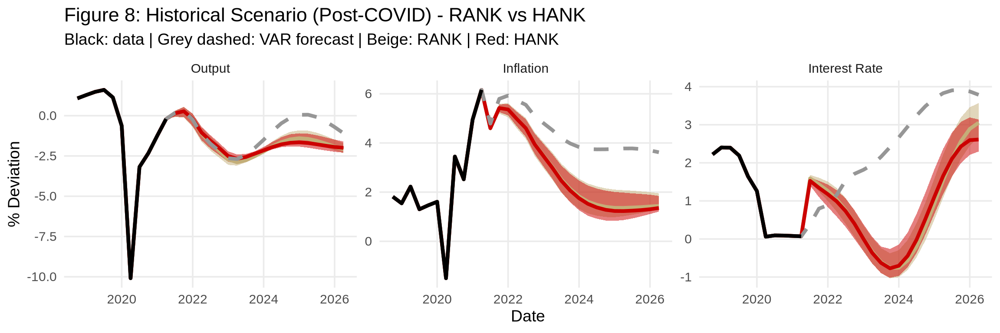
f8_2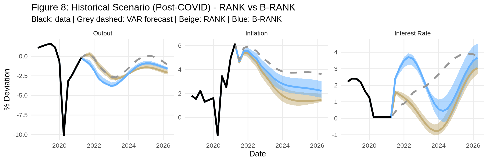
f8_3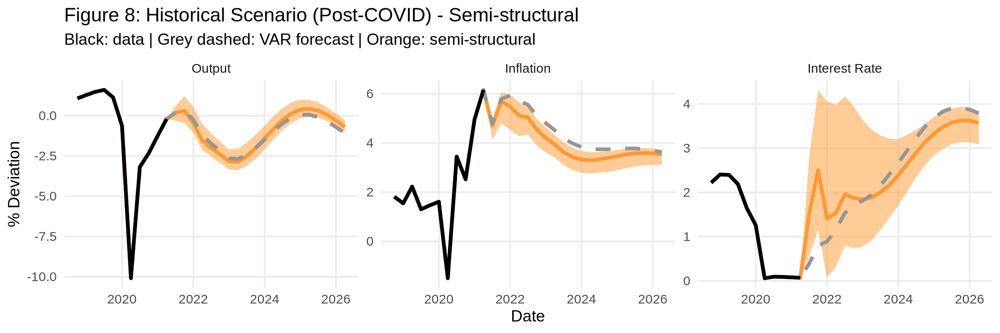
saveRDS(list(f8_1 = f8_1, f8_2 = f8_2, f8_3 = f8_3), "figure-8.rds")